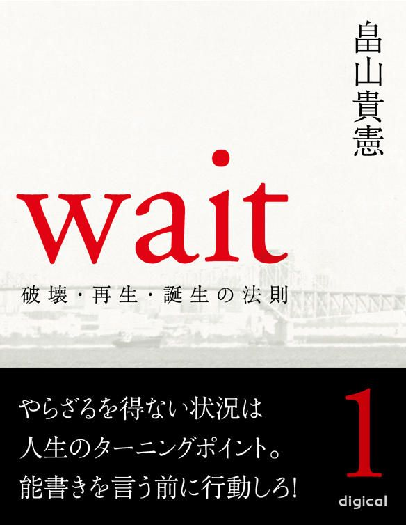
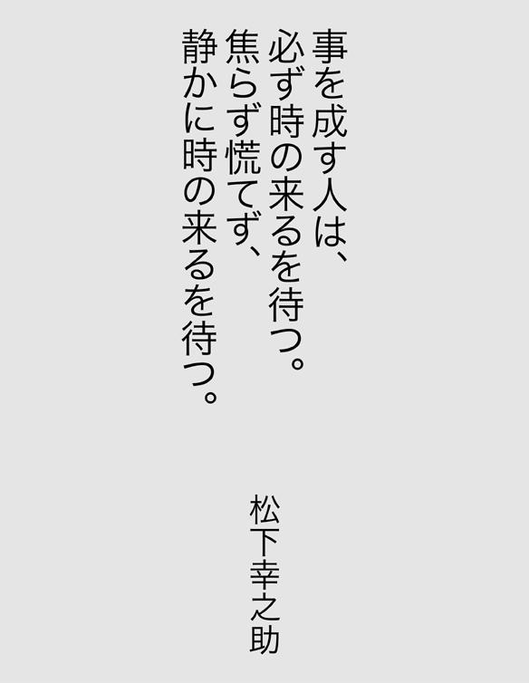

| Wait 〜破壊・再生・誕生の法則〜 第一巻 (【impress QuickBooks】) | |
| 畠山貴憲 | |
| (2012) | |


【プロフィール】
畠山 貴憲（はたけやま たかのり）
一九七〇年東京都生まれ。一九九七年劇団『ＡＴＡＣ』の座長になり、二〇〇二年劇団名を『ＴＨＥＡＴＥＲ ＪＵＮＫ』と改める。二〇〇三年『永遠の一秒』が、萬スタジオバックアップシリーズで最優秀審査員賞を受賞。翌年上演の『海を越えた挑戦者たち』はＦＭ沖縄制作のラジオドラマに選出される。その後、フリーになり、二〇〇九年小説『ｗａｉｔ』が、第十六回松本清張賞の予選を通過。四一〇編の中の三三編に選ばれる。来年、小説「（仮）バンミカセ！～海を越えた挑戦者たち～」が琉球新報社より出版予定。同作品は現在、映画化として進行中。
『事を成す人は、必ず時の来るを待つ。焦らず慌てず、静かに時の来るを待つ』
この言葉は、パナソニック（旧松下電器）の創業者、松下幸之助氏の名言です。
『何も咲かない寒い日は、下へ下へと根を伸ばせ。やがて大きな花が咲く』
これは、元女子マラソン、シドニー五輪金メダリスト、高橋尚子選手の座右の銘。
何れも、本作品中に登場する言葉です。
今からちょうど五年前、私は十年間座長を務めた劇団を断腸の思いで閉じました。そして、それからすぐに睡眠障害を患ってしまい、日に日に体力が奪われていきました。まさに負のスパイラル。加速度をつけながら、私の身体が悲鳴を上げます。
まず耳が聞こえなくなり、しばらくして、今度は高熱が一週間ほど続いたと思ったら、突然、顔の右側半分が動かなくなりました。
顔面神経麻痺──
私の細胞一つ一つが破壊されていくような気がしました。
苦
悶
、煩
悶
の日々が続きました。
もう限界でした。
そんなある日、雨に霞む海岸通りを眺めていたら、遠くにぼんやりと明かりが見えたのです。すぐにガソリンスタンドの明かりだと気付いたのですが、私はその明かりがなぜかしら『自分の進む道しるべ』のような気がしてなりませんでした。
本作品の構想が降ってきた瞬間です。
ちょうど、そんな時でした。先ほどの言葉（松下幸之助氏と高橋尚子選手の言葉）に出会ったのは。
『事を成す人は、必ず時の来るを待つ。焦らず慌てず、静かに時の来るを待つ』
『何も咲かない寒い日は、下へ下へと根を伸ばせ。やがて大きな花が咲く』
それから私は、耳が聞こえなくても顔が動かなくても出来ること......そう、本を書き始めたのです。
自分の過去を、主人公、志村洋介にトレースしました。もちろん、洋介ほど私は格好良くありませんが、この主人公は見事、私の過去を受け入れてくれました。
そして半年の時間を要し、ようやく書き上げました。私の小説処女作『ｗａｉｔ』を。
本作『ｗａｉｔ』は、あくまで自分の過去をモデルにしたフィクションですが、私はこの作品を書き上げて、一つだけ気付いたことがあります。それは、これまで私の歩んできた人生が、実は自分好みの物語だったということ。つまり、自分好みの物語のような人生を、私はこれまで歩んできたというわけです。
人生とはとかく、そういったものなのかもしれません。
読者の皆さんも、一度、この機会に自分の人生を振り返ってみて下さい。望むと望まないに関わらず、実はそれが自分好みの物語だったことに気付くかもしれませんよ。
最後に蛇足ですが、そんな私の物語は、数ヵ月後、松本清張賞の予選を通過しました。
人生には必ず物語がある。そしてそれは、往々にして自分好みの物語になる。
畠山貴憲
【登場人物】
○志村洋介 劇団『ｗａｉｔ』座長。劇作家。演出家。俳優。
○西村恭子 女優。
○高田直哉 俳優。フリーター。
○東野美穂 女優。フリーター。
○松原守 俳優。フリーター。
○鳥海研二 俳優。フリーター。
○西村翔太 恭子の弟。
○大原社長 大原プロの社長。
○勝田信夫 舞台監督。洋介の師匠的存在。
○美川俊二 俳優。フリーター。
○中込ゆり 日南放送社員。
○大沼育子 日南放送報道部副部長。
○三島友則 福岡県のとある会館の職員。
○橋本昌美 宮崎県小林市のとある会館の館長。
○仲間 聡 沖縄県在住の洋介の知人。
○新垣正弘 沖縄県那覇市議の秘書。
○高嶺 徹 琉球タイムス社文化事業局事業部部長。
○川岸正平 劇団『ｗａｉｔ』制作。
○川本新之助 宮崎県のとある会館の館長。
○長森健一 宮崎のとある劇団の座長。
○君島 恵 女優。タレント。
○安岡邦子 戦争当時、特攻隊を見送った生き証人。
○野上理恵 女優。フリーター。
○小峰修一 プロデューサー。
○真柴健吾 映画監督。
○添田 久 出版社編集員。
○山田憲明 舞台照明。
ｗａｉｔ ～破壊・再生・誕生の法則～
第一巻 やらざるを得ない状況は人生のターニングポイント。能書きを言う前に行動しろ！
第二巻 この世は全てタイミング。勝負のシグナルを見逃すな！
５ 流れの中で
五 布
石
６ 丸い高架橋
六 宮崎と沖縄（その一）
七 宮崎と沖縄（その二）
７ 春の歌
八 結実
第三巻 破壊を恐れない。破壊なくして新居は建たない
８ 回顧
九 夏の終わり
９ その先へ
十 二つの影
10
青海南ふ頭公園
十一 破壊と再生
11 誕生
１
天
王
洲
のカフェ
先ほどまであんなに晴れていた空がいつの間にか黒い雲に覆われ、遂に雨が降り出した。店内では相変わらず、南国の蒼い海と青い空がテレビモニターに映し出され、ＢＯＳＥのスピーカーからハワイアンのトロピカルなサウンドが響いている。周りの客は、平日ということもあってＯＬやらサラリーマンばかり。ビビッドなサウンドと仕事の愚痴を言うグレーな声が店内を複雑な色に染め上げていた。
洋介が雨に気付いたのは、窓の外からストロボのような閃光を感じたからだ。一瞬、誰かが写真でも撮っているのかと思ったのだが、次の瞬間、耳をつんざく雷鳴でそれと気付いた。
〈どうしよう......傘、持ってきてないや......〉
耳栓代わりのイヤホンをしたまま、洋介は深いため息をついた。
天王洲アイルの中にある、ちょっとお洒落なカフェ。彼がここへ来るのは一年振りだった。別に、何となくここへ読書に来たのではない。ちゃんとした意志を持ってここへ来たのだ。テーブルの上には、食べかけのサンドウィッチと氷が融けて透明の層ができているアイスコーヒー、それと、ハードカバーの本が一冊。
昨日、古本屋で『東京湾景』を購入した洋介は、この本に描かれているシチュエーションの中で読んでみたくなり、天王洲アイルにあるこのカフェに来た。そして、最後の『お台場まで』という章を残してりんかい線でお台場へ向かい、その最後の章をタイトル通りお台場で読み終える予定だった。かなりベタな計画ではあったが、それほど暇だったのだ。
「俺は、一体、いつまで待てばいいんだろう......」
あっという間に水溜りの出来た石畳を眺めながら、洋介がポツリと呟いた。
今年に入ってからというもの、正月に数日間仕事をしただけで、後はこの数ヶ月ずっと待っていた。二年間さぼっていたフィットネスジムに再び通いだし、今まで熟読していなかった八百ページにも及ぶ歴史書を三回も読み返して要点をパソコンに移し出した。日本語のルーツから太平洋戦争に至るまで。
それでもまだ時間は余った。今度はＤＶＤを狂ったように観始める。『二百三高地』『大日本帝国』『零戦燃ゆ』『仁義なき戦い』......どれも、洋介の大好きな脚本家、笠原和夫作品ばかり。
それでもまだ時間は余った。そこで昨日、古本屋へ行き、小説をまとめ買いしてきたというわけ。
ふと、イヤホンと繋がっている携帯に目をやる。着信があればそのイヤホンからメロディが流れてくると分かっていても、無意識に確認してしまう。着信がないのを確認すると、今度はメモのボタンを押す。洋介は携帯のメモ帳をネタ帳代わりにしていた。
『人は感情の動物だからこそ、自分を律することが必要なのだ』『人として最も恥ずべき行為とは、罪を他人になすりつけたり、嘘をついて責任逃れをすること』『人には二つのタイプがある。与えることを望むタイプと、与えられることを望むタイプ』
携帯画面の最後に、今日、テレビを見て書き写した一番新しい言葉がある。
『何も咲かない寒い日は、下へ下へと根を伸ばせ。やがて大きな花が咲く』
洋介はその言葉を黙読すると、携帯を閉じ、再び『東京湾景』を開いた。
一
始動
ちょうど十年前、洋介は初めて脚本を書き始めた。別に脚本家になりたかったわけではない。仕方なしに書き始めたのだ。
洋介が所属している『未来予想ズ』というふざけた名前の劇団は、旗揚げ時の座長が命名した。未来予想図の『図』を片仮名の『ズ』にしてチームっぽさを出したかったのだろうが、もし最後の文字が片仮名でなくても、洋介はこの名前が気に入らなかった。なぜなら、ドリカムがどことなく苦手だったから。
そんな『未来予想ズ』の旗揚げ公演は見事に大失敗。それこそ未来予想図を描く前に、再び白紙に戻された。しかもこの公演後、演出兼座長を務めた神谷は、打ち上げの席で、「次の座長は洋介だから、宜しく」と告げて、あっさりと退団してしまう始末。もちろん最初はその言葉に困惑したが、あまりにも不甲斐ない旗揚げ公演に洋介は決心した。〈この劇団を何とかして、いっぱしの劇団にしてやろう〉と。
座長になって初めて行なった仕事は、劇団名を変えること。どうしても、「未来予想ズ座長、志村洋介です」とは言えなかったのだ。
結局、劇団名は洋介が命名した。新しい劇団名は『ｗａｉｔ ウェイト』。
『事を成す人は、必ず時の来るを待つ。焦らず慌てず、静かに時の来るを待つ』
これは松下幸之助の言葉だ。歴史上、偉業を成し遂げた人物は皆、その時が来るのを待った。
十七世紀、漢民族が支配していた明を、満州族のヌルハチは勢力を拡大しながら虎視眈々と狙っていた。そして一六一九年、ヌルハチ率いる後金軍はサルフの戦いで明を破り、その後にヌルハチの息子、ホンタイジが遂に清朝を建国した。
日露戦争で、世界最強とうたわれたバルチック艦隊を破って日本を勝利に導いた東郷平八郎は、敵が攻撃してきているにもかかわらず、その距離を絶妙な距離に保つまでは決して自軍に攻撃命令を出さなかったという。
明治維新を成し遂げた志士とて、あの革命が五年早くても遅くても、恐らくは成功していなかっただろう。つまり、全てはタイミングなのだ。そのタイミングを見極める目とそれを待つ精神力、それが事を成すのに最も重要なことだと洋介は考えていた。
こうして劇団ｗａｉｔは、洋介をリーダーに新たに活動を始めた。劇団が活動を始めるということは、公演企画を立てるということ。公演企画を立てるということは、作品を決めるということ。作品を決めるということは、既成の本にするのかそれともオリジナルにするのか決めなくてはならない。洋介は、コピーバンドのような劇団には絶対にしたくなかった。かといって、劇団員の中で本を書けて演出できる人間など一人もいない......。仕方なく、読み終えたばかりの小説を原作に脚本を書き始めた。もちろん、演出も。
処女作『未完成の城』の執筆は半年を要した。当時、洋介はロケバスの運転手のアルバイトをしており、雑誌の専属スタイリストと一緒に都内のショップを回って小物やら家具を梱包し、それを出版社や撮影スタジオに毎日運んでいた。一見すると楽そうな仕事だが、労働時間は通常九時から十八時。もちろん、スタイリストの都合によっては残業も当たり前。しかも月曜日から金曜日まであり、時には土・日に出勤することもあった。これでは普通のサラリーマンと何ら変わりない。それでも、なんとか休憩時間と休みの日を利用して脚本を書き上げた。
脚本を書き上げると、即座にある女優に連絡した。どうしても、彼女に演じてもらいたい役があったのだ。
「もしもし、志村ですけど」
「おォ～、久しぶり。元気？」
相変わらず西村恭子の声は、歯切れが良くて気持ちが良い。
「うん、なんとか」
「噂は聞いてるよ。今度、演出するんだって？」
「うん。そのことで、ちょっと話があるんだけど」
「なに？ もしかして、出演交渉だったりして」
「まァ、そんなとこかな......」
洋介の煮え切らない返事にも、恭子は張りのある声で返す。
「本、読ませてよ」
「うん。いつなら時間空いてる？」
「今週の土曜なら大丈夫だよ」
「じゃあ、時間が決まったら、また連絡する」
「了解。演出家先生」
電話を切った後、洋介は何だか複雑な心境で目の前にある書きあがったばかりの脚本を手に取った。
「演出家先生......か」
洋介が池袋の宝くじ売り場に到着したのは、約束の時間よりも十五分ほど前だった。恭子がその場所に姿を現したのは、約束の時間の十五分後。洋介は池袋の雑踏の中、三十分、彼女を待った。
「ごめん、ごめん。電車が遅れちゃって」と言いながら、Ｔシャツにジーンズ姿の恭子が小走りでやってくると、洋介は、「いきなり遅刻かよ」と応えながらも、思わずその均整のとれたスタイルに見とれた。
恭子は『大原プロ』という芸能プロダクションに所属しており、そこの養成所で講師も兼任している。歳は洋介の一つ上。昔、洋介は恭子のレッスンを受けていたことがあった。つまり、この二人の関係は先生と生徒。
「でもさ、メールくらいできたろ」と洋介が口を尖らせると、「だって、シルバーシートに座っちゃったんだもん」と、恭子も口を尖らせる。
「じゃ、立てよ」
「ごめん。そこまで気付かなかった」
洋介が養成所を辞めて以来、なぜか二人の会話はこんな感じだった。別に付き合っているわけでも、男女の関係があったわけでもない。
「別に、どこの店でもいいよな？」と、道行く人を避けながら洋介が訊く。
「演出家先生に任せる」と、恭子は洋介の背中に応えた。
「ちょっとさ、その演出家先生っていうの、やめてくんない？」
「じゃ、なんて呼ぼうかな」
「いいじゃん、今まで通り志村君で」
「だって、志村君っていうとさ、なんだか自分の苗字を呼んでるみたいなんだもん」
「なんで？」
青信号が点滅し出したので、二人は足早に横断歩道を渡った。恭子が洋介の隣に付く。
「ほら、西村の『西』って、両方とも母音が『い』でしょ。だから、『に』がハッキリ発音されないと、『し』が無声化されて強調されるから、シムラに聞こえるの」
「それ、おたくの社長が怒鳴る時だけだろ？」
「だから嫌なの！」
「なんかそれって、俺の苗字が嫌って言われてるみたいなんだけど」
雑居ビルの中にあるエレベーターのボタンを押しながら、洋介がまた口を尖らせる。
エレベーターが開くと、次々にその小さな空間へ人が押し寄せてきた。なぜか洋介は、女性と二人でエレベーターに乗るといつもにやけてしまう。二人だけならそんなこともないのだが、満員のエレベーターに乗るとなぜかにやけてしまうのだ。別に今までその理由を深く考えたことはなかったが、今、初めてそれを考えてみた。きっと話したいけど話せないこの密室が面白いのかもしれないと思った瞬間、恭子が声を潜めて話しかけてきた。
「じゃ、リーダーってどう？」
洋介はとてつもない笑いが込み上げてきて必死にそれを堪えた。それは恭子の言葉にではなく、言葉を発した恭子にである。
「ねェ、ねェ」と、その大きな目を更に大きくして返事を催促する恭子に堪えきれず、洋介が吹き出したのと、エレベーターの扉が開いて人が噴き出したのはほぼ同時だった。
「いらっしゃいませ！」
男性店員の大きな声と洋介の大きな笑い声が重なる。
この店は手羽先が自慢らしいが、決して美味しい代物ではない。それでもいつも大勢の客で賑わっているのは、単純にその値段の安さにあるのだろう。洋介はこの店で酒を飲むたび、翌日、必ず頭が痛くなった。しかしいくら翌日に響こうが、この値段の安さにはかなわない。『生ビール・サワーどれでも百円均一！』
店内は、若者とサラリーマンとＯＬでごった返している。楽しい酒。悲しい酒。神妙な酒。いやらしい酒。多種多様。
洋介と恭子は女性店員に案内され、角のテーブル席に着いた。
「ご注文は、いかがなさいましょう？」と、流暢な日本語を話す中国人留学生らしき店員に訊かれると、まず洋介がお絞りで顔を拭きながら、「生」と応え、そのあとに恭子が、「二つ」と笑顔でピースサインを作ってみせる。しかし伝票に記入しながら、「かしこまりました」と言った彼女の顔は、なぜだか不機嫌。いや、そう見える。
また新たな客が入ってきた。店内のあちこちから、「いらっしゃいませ！」の声が響く。その女性店員も不機嫌そうな顔のまま、「いらっしゃいませ！」と、怒声のような声を張りあげる。そんな店内の様子を、洋介がお絞りを畳みながら観察するように窺っている。恭子は、そんな彼をジッと観察した。
実は、こういった酒の席で周りの人間を観察するのが、洋介は好きだったのだ。若い男女の席は特に。そんな彼の顔を窺いながら恭子が怪訝そうに、「なに、そんな嬉しそうな顔してんの？」と尋ねると、「別に」と言って、今度は畳んだお絞りでテーブルを拭き始める。
日本人が『別に』という答え方を覚えたのは、一体、いつ頃からなのだろうか。
『なに、怒ってるの？』『別に』
『なに、泣いてるの？』『別に』
『なにが、そんなに可笑しいの？』『別に』
よくよく考えたら、一切、会話になっていない。その理由を訊いているのに、『別に』というのは質問の答えになっていないではないか。『Ｗｈｙ』と質問したら、ちゃんと『Ｂｅｃａｕｓｅ』で答えろ！ と、つまらないことで恭子が腹を立てていたら、洋介が、『Ｂｅｃａｕｓｅ』で答えた。
「あの男、ふられるな」
「え？」
「ほら、お前の後ろに座ってるカップル」
恭子が振り返る。
「バカ！」
思わず、洋介は小声で怒鳴った。しかしその声もカップルに届いてしまい、洋介と恭子は益々ばつが悪くなる。そんな空気を救ってくれたのは、先ほどの不機嫌そうな店員さん。
「お待たせしました！」と、なぜか怒られるようにして言われると、二人は、「ありがとう」と引きつった笑顔で応え、洋介がメニューから適当に注文をする。
「冷奴と枝豆と手羽先」
「かしこまりました」
店員が去るのを見計らって、「ねェ、ここの手羽先、美味しくないんでしょ？」と、恭子が身を乗り出しながら恐る恐る訊くと、「どれ食ったって、うまくねェよ」と、洋介が平然と答える。
「え？」
「ま、ま、ま、そんなことより──」
そう言って洋介が急かすようにジョッキを掲げ、二人はビショビショに濡れたジョッキを重ねた。
「乾杯！」
店内は相変わらず、人の声とスピーカーから流れてくる歌手の声が、どちらも負けじとボリュームを上げている。
「ほら、酔う前に」と、洋介が台本を差し出す。恭子は、「ありがとう」と言ってそれを受け取ると、ペラペラとページを捲った。そんな彼女を洋介が不安げに見つめる。何せ、自分が初めて書いた脚本だ。よく画家とか作家が、自分の作品を初めて見せる時は裸を見せるより恥ずかしいと言うが、何となくその気持ちが分かったような気がした。いや、むしろ洋介は自分の裸には自信があった。昔、フィットネスジムでインストラクターのバイトをしていた時から自らもトレーニングを始め、それ以来、どこか筋肉オタクの気があるくらいだ。だから皆で酒を飲みに行っても、つまみは豆腐や枝豆といったタンパク質を多く含むメニューを好んだ。
台本を食い入るように読んでいる恭子を気にしながら、洋介が煙草に火を点ける。店内のＢＧＭは、いつの間にか邦楽から洋楽へと変わっていた。
「ねェ、私、知子って役でしょ？」と、恭子が台本に視線を落としたまま訊くと、洋介は隠す素振りもなく、「うん」と正直に答えた。
「なんかこのまま読んだら、最後までここで読んじゃいそうだから、帰ってからゆっくり読むわ」
恭子がそう言って台本を鞄の中にしまうと、今度は男性店員がやってきた。
「お待たせしました。冷奴と枝豆と手羽先になります」
テーブルの上に並べられたそれぞれの品は、見た目では決してまずそうではない。
「わァ、美味しそうじゃない、この手羽先。食べよ。私、お腹すいちゃった」
香ばしそうな匂いを漂わせている手羽先に恭子が手を伸ばしたとき、突然、洋介が、「あッ」と声を上げた。
「どうしたの？」と、恭子が慌てて手を戻す。
「この曲」
天井を指差す洋介を見て、恭子が耳を傾ける。
「スイートボックス？」
「うん」
バッハの名曲『Ｇ線上のアリア』をラップ調にしたこの曲は、この年、よくラジオから流れていた。
洋介はロケバスの中で度々、自分の書いた台詞に曲を合わせて演出していた。どちらかといえば、脚本家より演出家の方が向いていたのかもしれない。しかし、本がなければ演出は出来ない。例えば、いくら腕の良いコックがいても、食材がなければ料理が出来ないのと一緒だ。
洋介がジョッキの底をお絞りで拭きながら、「今回、この曲を使おうと思うんだ」と言うと、恭子が、「え？ スイートボックスを？」と目を丸くする。その顔が可笑しかったのか、それとも半音上がった恭子の声が可笑しかったのか、「違うよ。Ｇ線上のアリア。ヨハン・セバスティアン・バッハ」と洋介は笑った。まさかそんな、バッハをフルネームで言われるなんて思ってもみなかった恭子は、また目を丸くした。
「それにしても、リーダーってホント不思議だよね」と恭子が頬杖をつく。
「なんで？」
「だってさ、見た目は、絶対にクラシックなんて聴かない！ って感じなのにさ──」
「俺がクラシックを聴いてると、そんなに可笑しいか？」
「別に可笑しくはないけど......なんだか不思議な感じ」
「ふ～ん」と口を尖らせながら煙草をもみ消すと、洋介は手羽先を一つ手に取り、かぶりついた。口の周りが手羽先の油で光る。
「ところでさ、まだいる？」
「え？」
恭子の質問の意味が最初、洋介にはさっぱり分からなかったが、「う・し・ろ」と、口を大きく開けたその仕草でようやく分かった。
「あァ、さっき帰ったよ」
後ろを振り向いて先ほどのカップルがいないのを確認すると、恭子は再び洋介に質問を投げかけた。
「どうして、分かったの？ 男がふられるって」
「雰囲気だよ、雰囲気」
「へェ～」と、その答えに満足のいっていない恭子は、ビールジョッキを空にしてから店員を呼んだ。
「すいませーん！」
男性店員が足早にやってくると、「おかわり──」と言ったところで一瞬、洋介を窺ってから、「二つ」と再びピースサインを作ってみせる。このピースサインは、もちろん『二つ』という意味で、今、店内に流れはじめたジョン・レノンの『イマジン』とは何の関係もない。先ほどの不機嫌そうな店員が、忙しなく横を通り過ぎる。
「俺、好きなんだよね。男と女がお互いの心中を探り合ってるのを見るの」
そう言って、洋介はまた店内を見回した。恭子は枝豆に手を伸ばす。
「へェ～、でも、あまり、いい趣味とは言えないね」
「そうか？ でも役者には必要だと思うけど」
「そうかな」と言った恭子の口には、枝豆がくわえられている。
「だって、台本に書かれてある台詞と台詞の間には、たくさん機微が埋まってるんだぜ。その、台詞に書かれてない台詞を掘り起こして表現するのが役者の仕事だろ？」
「まァ、そうだけど」
「その機微を探るには、男と女の会話が一番分かりやすい」
「じゃあ、私たちの会話はどうなの？ この会話の中にどういう機微が埋まってるの？」
「え？」
「周りは、私たちのことをどう見てると思うの？」
また怒ったようにして、「お待ちどうさまです！」と、あの店員がジョッキをテーブルの上に二つドカッと置く。洋介はそのビールを一口飲んでから、泰然たる口調で言った。
「一つだけ確かなことは──」
恭子が洋介を上目遣いで見ている。
「さっきから、恭子は俺に質問ばかりしてるってことかな」
「え？」
「きっと、この会話を台本に起こしたら、恭子の台詞は『？』だらけだぜ」
質問をするのは、『あなたのことを、もっと知りたいからです！』と喉まで出掛かったが、恭子はその言葉をビールと一緒に呑み込むと、替わりにこう言った。
「きっとリーダー、良い演出家になるね」
洋介のもとに恭子から連絡があったのはその翌日だった。恐らく、あれから自宅で何度も本を読み返した為に一睡もできなかったのだろう。恭子は日曜の朝八時という、まだ良い子のみんながテレビの前で仮面ライダーを応援している時間帯に電話をかけてしまった。
「もしもし、恭子です。ごめん、寝てた......よね？」
「うん......」
「あッ、ごめん......じゃ、また後で掛け直すよ」
「いいよ。どうした？」
どうやら洋介は、まだ寝ぼけているようだ。「どうした？」って、恭子が電話をかけてくるのだから要件は一つしかない。
「知子役、是非、私にやらせて下さい」
「え？ 誰？ ともこ？ え？ 恭子......だよな？」
恭子は、「やっぱ、また後にする」と言って、冷たく電話を切った。
この二人が再び顔を合わせたのは、それから一ヵ月後の稽古初日。なぜか恭子と会ったあの日以来、ｗａｉｔのメンバーも洋介のことを『リーダー』と呼ぶようになっていた。
ｗａｉｔの初代メンバーは、恭子を含めて十一人になった。恭子はあの日、電話で自分もｗａｉｔに入れてほしいと告げ、晴れてメンバーの一員となったのだった。
大半は彼女の入団を歓迎した。『大半は』というのは、全員ではないということ。顔では快く受け入れているが、決して心の中ではそうでないと、数人の女優陣を見て洋介はすぐに分かった。確かに華のある女優が入団するとなると、男優陣はそれだけで嬉しいのかもしれないが、女優陣にとってはそうも言っていられない。ライバルが増えるのだから。ルックス・スタイル・実績の三拍子揃った女優、西村恭子という最大のライバルが。しかし視点を変えれば、それは同時に自分を高めるチャンスでもある。洋介は、そう考えてくれることを切に願った。
長机を四つ組み合わせて正方形を作り、役者は全員、互いの顔が見えるように座る。まるで会議でも行なうようだが、ｗａｉｔの本読みはいつもこうだった。
稽古前に、メンバー最年少の高田直哉と人数分コピーした台本は、もう既に全員が目を通していた。最年少ということもあってか、洋介は直哉を可愛がった。また、直哉も洋介を兄のように慕っていた。
「では、キャストを発表します」
洋介の一言で、メンバーの表情に緊張が走る。といっても、誰がどの役になるのか大よその見当は皆ついていたらしく、きっと『内定』から『確定』になった程度なのだろう。実際、洋介がキャストを発表しても、一様に『やっぱり』といった表情を浮かべていた。ある役以外は。
「じゃ、次、知子役は──恭子」
「はい」
その瞬間、女優陣の目が一斉に恭子に注がれた。洋介は、そんな女優陣を一瞥してから先に進んだ。
知子という役は有名女優の役である。本来、女優が女優役をやるというのは難しいのかもしれないが、洋介はここにいる役者陣をまだ一人前の役者とは認めていなかった。いうなれば役者の卵、或いはさなぎといったところだろうか。もちろん、自分自身も含めて。
洋介は二十一歳の時、役者になろうと決意した。それから現在に至るまで、数多くのバイトをしてきた。ホスト、清涼飲料水の営業、フィットネスジムのインストラクター、居酒屋の店員。中にはこんなのもあった。農家のビニールハウスの設営。こうした経験の中から一つだけ心に決めていることがある。それは、バイトを辞めて役者として一本立ちするまでは、他人に職業を訊かれても『フリーター』と答えること。
以前、駐車違反で警察に捕まった時も洋介は、職業を「フリーター」と答えた。すると、その警察官は眉一つ動かさず、「無職ね」と言った。
確かにそうだ。『フリーター』とは世間一般では『無職』だ。それでもバイトで生計を立てている以上、プロの役者とは言えないと、現在も自分で決めた掟を貫き通している。ｗａｉｔの座長を引き受けてからは、その気持ちが更に強くなった。ちなみに、今のバイトはバーテンダー。
「それじゃ、今日の稽古はこれでとります。お疲れ様でした」
洋介の声にメンバーが応える。
「お疲れ様でした！」
およそ三時間の稽古が終わり、メンバーは各々、片付けに入った。今日は、これから決起会という名の飲み会があるからだろうか、いつになくスピーディーに片付けは終了した。
アルバイトで生計を立てている貧乏役者にとって、やはりこの店は有難い。池袋にある手羽先が自慢のお店『こけっこ』にｗａｉｔのメンバー十一人が集結した。直哉が予約した席は、奥の座敷部屋。個室になっているので周りの酔っ払いを気にせずに飲めるが、洋介は人間観察が出来なくて少し寂しそうだった。
隣に座った東野美保が、「リーダー、なに飲むの？」と甘えた声で訊くと、洋介は相変わらずお絞りで顔を拭きながら、「生」と応えた。
「リーダー！ それ、おっさん臭いで」
大阪出身の鳥海研二が突っ込みを入れると、同じく関西、奈良出身の松原守が更に追い討ちをかける。
「しゃあないやん。だって、おっさんなんやから」
「うるせェ。二十八歳のどこがおっさんやねん。二十八歳ちゅうたら、まだケツの青いクソガキじゃい！」
洋介の弁解はちょっとキツかった。しかし、恭子がそれを救ってくれた。
「ちょっと、守。ていうことは、私は、おばさんってことですか？」
「え？ いや......恭子さんは、お姉さんですよ」
恭子は、洋介を見て笑った。洋介は笑いながら、守にお絞りを思いっきり投げつけてやった。
「ちょっと、リーダーやめなよ。もう、子供なんだから」
隣で美保が、まるで彼女の様に洋介をたしなめる。
「うるせィ」
恭子は、そんな二人からなぜか視線を逸らしてしまった。
恭子と美保は、以前は同じ事務所の先輩と後輩の関係でとても仲が良かったのだが、美保が事務所を辞めて以来、疎遠になっていた。しかし、こうしてまたｗａｉｔで再会を果たしたのだった。つまり洋介と恭子と美保は、同じ事務所の先輩と後輩でもあったのだ。
「お待ちどうさまです！」
男性店員が十一個分の生ビールを一人で持ってきた。すかさず、一番年下の直哉がジョッキを皆に回す。
「はい、はい、はい──皆さん、ジョッキは渡りましたか？」
「は～い！」
「それじゃ、リーダー、乾杯の音頭をお願いします」
直哉の声に促され、照れ臭そうに洋介が立ち上がる。
「え～、それでは、『未完成の城』の成功と、劇団ｗａｉｔの発展を祈って、乾杯！」
「乾杯！」
「ワー」とか「ヤー」とか「オー」とか、言葉というより表音文字を発しながら一同がジョッキを重ねる中、洋介はふいにある言葉を思い出した。
『言語と文字は別である。言語は音であり、文字は符号である。文字は言語に及ばないが、その言語は行為に及ばない。イエス・キリストもブッダもソクラテスも皆、行為者に他ならないのだ』
確かに洋介も、それは一理あると思った。手紙やメールよりも、電話で直接、言葉にして伝えた方が相手に誤解を招きにくい。なぜなら、声にすればその高低や強弱で気持ちを的確に伝えることが出来るから。それよりももっと確実なのは、実際に会って話をすること。そうすれば、今度は表情という武器もプラスできる。
『文字は言語に及ばない。言語は行為に及ばない』
洋介はこれから、文字・言語・行為と、全てのものと向き合わなくてはならない。脚本家は『文字』で自分の世界を描き、演出家はその文字を『言葉』に起こし、より立体にしていく。そして役者は、それらに表情や動きをプラスした『行為』で表現しなければならないのだから。
皆の顔はどれも笑顔だった。洋介は、そんなメンバーの笑顔を眺めながら美味しそうにビールジョッキを傾けた。
２
止まない雨
ネオンの光が濡れた石畳に反射しているせいだろうか、洋介は窓際で本を読んでいるにもかかわらず、外が暗くなっていることに全く気付かなかった。先ほどから雨脚は殆んど変わっていない。外の雨音は、見事に店内のトロピカルなサウンドによって掻き消されていた。
このとき既に、最後の章を残して、お台場で読み終えるという計画は変更されていた。理由は簡単。傘を持っていないから。そのうちに止むだろうと高を括っていたのだが、一向に止む気配はない。そうこうしているうちに『東京湾景』を読み終えてしまった。
本を閉じ、雨に輝く外の景色をぼんやりと眺める。
「この向こう側が、ちょうどお台場なんだよな......」
洋介にとって、お台場はとっておきの散歩コースだった。海岸通りに面している自宅マンションからレインボーブリッジを歩いて渡り、そのまま海岸線をひた歩く。お台場海浜公園を過ぎ、潮風公園へ。そして南極観測船『宗谷』と青函連絡線『羊蹄丸』の脇を通って最終目的地、青海南ふ頭公園へと辿り着く一時間ほどの散歩コース。この青海南ふ頭公園は、洋介の大のお気に入りの場所だった。東京湾を挟んだ向こう側に大井埠頭を望み、その奥には天王洲アイルの高層ビル群、つまり、ここ。パノラマに広がるその景色は、六本木ヒルズや東京タワーはもちろん、羽田空港に離着陸する旅客機まで肉眼で捉えることができる。しかも、天気の良い日には遠く富士山まで見渡せるのだ。ここからのサンセットは、これまた格別。洋介は、事あるごとにこの場所を訪れた。いや、別に事がなくても、時間のある時はここを訪れていた。昨年の夏は......
ふと、ある台詞が脳裏をよぎり、再び本を開く。その台詞はラストのページにあった。
『私にはまだ傷がない』
これは、青山ほたるという作家の連載小説が、急遽、休載になるというシーン。そこで彼女が、お詫びの言葉として雑誌に載せた言葉だった。
『私にはまだ傷がない』
そのページを開いたまま、外の輝く景色へ視線を戻す。店内で響いているハワイアンは、洋介の耳まで届いていない様子。本を閉じ、徐に席を立つ。鞄に本をしまい、上着を羽織る。店員の一人がせっかちに、「ありがとうございました！」と、カウンターの中から声をかける。洋介は、そのまま静かに店を出た。
幾つもの店舗が入っているこのビルは、大きな劇場も入っていた。三ヶ月前、洋介は一人でこの劇場にミュージカルを観に来ている。どことなくミュージカルは苦手だったのだが、その作品は本当に素晴らしく、観劇後しばらく興奮が収まらなかった。そんなことを思い返しながら傘の売っている場所を探し歩き、ＦｒａｎｃＦｒａｎｃの店頭に並べてあるモスグリーンの傘を購入した。『ＳＡＬＥ！ ￥５００』
真新しい傘を開き、雨で輝く町を歩き出す。雨は先程よりだいぶ小降りになっていた。
二
代表作
事実上、ｗａｉｔの旗揚げ公演は大成功だった。予想以上にお客さんも入り、公演アンケートの評価もこれまた予想以上に高かった。『未来予想ズ』の頃に比べたらこの結果は雲泥の差だ。洋介は、ひとまず自分の役目が果たせたと、ホッと胸をなでおろした。もちろん、そうともなれば打ち上げが盛り上がらないわけがない。
月島のもんじゃ焼き屋で一次会を盛大に行ない、二次会はそのまま銀座へ。といっても、赤い看板の居酒屋さんだけど。
いつの頃からかメンバーの間で『和民』『白木屋』『笑笑』といった居酒屋チェーン店を『赤い看板』と呼ぶようになっていた。理由は、どのチェーン店も看板が赤いから。
公演ビデオを撮っていた恭子の弟、翔太は、一次会から打ち上げ風景も撮影していた。公演後、洋介はそのビデオを何度も観返したが、打ち上げシーンまで観たのは、この日が初めてだった。
それは二次会でのこと。お客さんから貰った花束やら、お酒やら、お菓子やらの大荷物を抱えて店に入ってくるメンバーを、翔太がカメラを回しながら、「お疲れ様です」と言って迎えている。入店した時は、時おり疲れた表情を浮かべていた者も、翔太にカメラを向けられるとすぐに笑顔に変わり、つまらないギャグまで添えている。その時、画面の奥から美保の甘えた声がかすかに聞こえてきた。
「リーダーどこに座るの？ 私、リーダーの隣がいい」
まァ、これくらいならいつもの事だと流せるのだが、洋介が、「ん？」と思ったのは、そんな美保を引きつった表情で見ている直哉だった。もう一度、巻き戻して見てみる。やはり、美保が言った『リーダーどこに座るの？ 私、リーダーの隣がいい』という言葉に対しての反応に間違いない。洋介は薄い笑みを浮かべながら、「別に恋愛は自由だけど、本末転倒になるなよ」とテレビの中の引きつった直哉に呟くと、ビデオを消してからテーブルの上に置いてある台本『いあん』を手に取った。この台本は、直哉が書いたもの。次回公演は、直哉の作・演出で行なうことになっていたのだ。
洋介は、決して作家や演出家になりたいわけではない。あくまで役者になりたかった。だから、自分の次に作・演出の出来る人間を求めていた。そこで立候補してきた直哉が、次回公演の作・演出に選ばれたというわけ。しかし、直哉の書いたこの『いあん』という作品は、周囲から猛烈な批判を受けた。
「まったく......」
ペラペラとページを捲りながら、洋介がため息混じりの声を出した時、テーブルの上で携帯がブルブルと踊った。
「もしもし」
池袋の喫茶店で恭子と翔太の三人で会うことになった洋介は、いつもの宝くじ売り場で二人を待った。辺りは相変わらず黒山の人だかり。
〈どこから、この人達は湧き出てくるんだろう？ きっと上から見下ろしたら、蟻んこのようで気持ち悪いんだろうな〉
洋介は、池袋の街で唯一といっていい高層ビル、サンシャインビルを見上げた。
いつも、不思議だった。新宿や品川は次々と高層ビルが建ち並んでいくのに、どうして池袋だけはこのサンシャイン以外、他の高層ビルが建たないのか。
昔から洋介は、どこか土地の雰囲気に敏感なところがあった。例えば、後輩のアパートを探しにＯ町界隈を歩いたとき──
「なんか、この町って独特な雰囲気ない？」と辺りを窺いながら洋介が訊くと、後輩は全く何も感じていないようで、「そうっすか？」と応えると、こんなことまで付け加えた。
「そういえばこの前、この近辺をネットで検索してみたら、この辺って昔、刑場があったらしいですよ。ほら、鈴ヶ森刑場って有名な」
「へェ～......そんな有名な刑場があった場所に、お前、住みたいんだ」
「俺、別に、そんなの気にしませんから」
「あッ、そう......」
そういう意味ではここサンシャイン近辺も、第二次大戦後、極東軍事裁判で被告人となった東条英機らが処刑された場所（巣鴨プリズン）として有名だが、洋介はなぜかこの池袋という街が嫌いではなかった。実際、今この街に住んでいるのだから。
明治通りを右翼の街宣カーが、『歩兵の本領』を大音量で流しながら走り抜けたため、洋介は危うく携帯の着信音を聞き逃すところだった。
「もしもし」
「リーダー、恭子です。もう、宝くじ売り場にいる？」
「うん」
「あァ、ごめん。今、社長といるんだけど、社長も話が聞きたいって言ってるんだけど、いいかな？」
「翔太は？」
「今、一緒にいる」
「分かった」
「じゃ、西口のポエムって喫茶店知ってるでしょ？」
「うん。前に打ち合わせしたところだろ？」
「そうそう。私たち、今、そこにいるから」
「はいよ。じゃ、今からそっち向かうわ」
「はい」
恐らく『いあん』の台本のことで、恭子が所属事務所の社長に色々と相談したのだろう。
恭子と翔太は本当に仲の良い姉弟だった。この台本にまず「待った！」をかけたのは翔太だ。彼は、前回の公演からｗａｉｔの制作担当になっていた。その翔太から姉である恭子に話が行き、恭子から社長に話が行ったに違いない。そんなことを考えながら洋介は、線路を潜る地下通路を通り抜け、西口へと歩いた。ふと、アンモニアの臭いが鼻を突く。
〈でも社長は、一体、俺に何を言うつもりなんだ？〉
実際に社長といっても、今では洋介となんの関係もない。昔、所属していたプロダクションの社長というだけで、ｗａｉｔのことに口出しする権利は何もなかった。まァ、資金援助でもしてくれているのであれば話は別だが。
「お疲れ様です」
地下にあるその喫茶店はテーブルが大きいため、よく舞台の打ち合わせなどに利用されていた。しかしコーヒー一杯が七百円と高かったので、スタッフとの打ち合わせ意外は殆んど利用されることはない。
「おォ、久しぶりやな、志村」
兵庫県出身の大原社長は、昔、運送会社を経営していたせいか、どこか荒々しい感じのする人だった。でも洋介にとって、この荒々しさは決して嫌いではなかった。
「お久しぶりです」
「読ませてもろうたで、この本」と、社長が台本をチョコンと持ち上げる。
「はァ......」
恭子が洋介を窺いながら、「リーダー、何にする？」とメニューを渡すが、洋介はメニューを受け取らずに、「アイスコーヒー」と答えた。すると今度は翔太が、「すいません！」とウェイトレスを呼ぶ。
正直、洋介は居心地が悪かった。この二人の様子から、何か仕組まれているような感じがしたから。
「率直に言わせてもらうが、この本は、ちょっと酷いなァ」
テーブルに置かれた台本を人差し指でトントンと叩きながら、社長がいきなり本題に入った。元々、眼光の鋭い人だが、今はその眼光がもっと鋭く感じられる。
「アイスコーヒー下さい」
水を持ってきたウェイトレスに、翔太が洋介のアイスコーヒーを注文すると、その言葉を最後にしばらく沈黙が続いた。
洋介は、それでもあえて口を開かなかった。全員の表情から見て取れるのは、明らかに自分を説得すること。台本を変更する説得を。約束通り、三人で会って自分を説得するならまだしも、社長を使って説得しようとするこの二人の行為がどこか卑怯に思えたのだ。〈社長に説得されれば、納得するとでも思ったのか？〉
そう考えたら、無性に腹が立ってきた。
「あの──」
我慢しきれなくなって洋介が沈黙を破った時だった。突然、恭子が泣き出した。
「ごめんなさい、リーダー。私......私が社長に相談したの。だって、せっかく、前回の公演が成功したのに、このままじゃ、あの公演が無駄になっちゃうと思って......」
姉をかばうように、翔太が口を挟む。
「やっぱ、次もリーダーが書いて演出した方がいいと思います」
〈そんな簡単に言うなよ......〉
洋介は、憤りを通り越して気が抜けた。それは直哉に対する説明責任から生じたのではなく、単に、また一から本を書いて演出するという行為がとても億劫に思えたのだ。
「わしも、そう思うで」
気の抜けた洋介にとって、この社長の一言はダメ押しに近かった。すると突然、社長が恭子の方を見ながら、「もう泣くな！ シムラ！」と声を荒らげる。
「はい！ え？」
洋介は一瞬、自分が呼ばれたのだと思ったが、以前、恭子が言っていた『西村』が『シムラ』に聞こえる話を思い出し、そうでないことに気付いた。
社長を一瞥してから、誤魔化すように店内を見回す。この店はブラジルまでコーヒー豆を取りに行っているのか？ と思うほど時間のかかるアイスコーヒーが出てきたのは、もう既に四人が帰り支度をしている時だった。
その日は朝から雨だった。直哉とお昼に待ち合わせをした洋介は、先に店に入ってランチを取ることにした。ランチといってもファーストフードのハンバーガーだけど。
相変わらず、その店は空気が悪かった。自分も煙草を吸うので文句も言えないのだが、洋介はこの店に来るたび、煙草の煙が気になる。エビカツをサンドしたハンバーガーをほお張ったとき、コーヒーと傘を手にした直哉が現れた。
「お疲れ様です」
「おふはへ」
エビカツは思ったよりも熱かったようだ。慌ててアイスティーで口の中を冷ます。
「大丈夫ですか？」
「うん......」
直哉の表情は穏やかだった。しかし洋介はこれから、この直哉にとても残酷なことを伝えなければならない。「『いあん』は、次の上演台本として採用できない」と。一度とはいえ、脚本を書いた経験を持つ洋介にとって、それを伝えるのは辛かった。『本を書く』という作業がどれほどの時間と労力を費やすか、身をもって理解していたから。
「ところで、お前は何も食べないの？」とストローをくわえたまま洋介が訊くと、直哉は、「自分、朝が遅かったんで」と応えながら、コーヒーにミルクを入れた。
「そう、じゃ、食べ終わるまで、ちょっと待ってて」
洋介は、ハフハフしながら意味のない時間稼ぎをした。余程の猫舌らしい。
直哉がトイレへ向う。店内のあちこちから、奇声にも似た女子高生の甲高い笑い声が聞こえてくる。相変わらず店内は、煙草の煙でかすんでいる。
直哉がトイレから戻ると、遂に意を決した洋介が口を開いた。
「なァ、直哉、『いあん』の件なんだけど......」
「美保さんから聞きました」
女子高生の奇声がまた聞こえた。
「え？ 何を？」
「だから、僕の脚本が却下されたって」
「え？ なんで？」
まるで、その笑い声は洋介に向けられているようだった。それほど素っ頓狂な顔をしていた。誰かが、「キモッ！」と声にした。
「なんでって......リーダーが決めたんじゃないんですか？」と直哉が口を尖らす。
「そうだけど......なんで美保が知ってんだよ」と洋介も口を尖らせる。
「翔太から聞いたんじゃないんですか」
「あの、バカ」
『人間というものは、何か一つでも権力を持つと、それをひけらかしたくなるもの。弱い人間は、それを誇示することによって自分を保っているのだ』
洋介は、いつかテレビで偉そうに話していた評論家の顔を思い出した。
どんな組織でも、ポジショニングというのは難しい。もちろん、ｗａｉｔでも。各々が自分の立場をわきまえなければ、たちまちその組織はカオスとなってしまう。まだ自分の事を過大評価し、その権力をひけらかしているだけなら救いようがある。本当の実力を教えてあげれば良いのだから。しかし、これに恋愛が絡んでくるとこれまた厄介だ。洋介は、ふとあの二次会でのビデオを思い出した。直哉が引きつった表情で美保を見ていた、あのビデオを。
「ところで直哉──」
「はい」
「お前、美保には電話で聞いたのか？」
「え？」
直哉は一瞬、顔色を変えたが、すぐに普段のポーカーフェイスに戻した。しかし洋介は、その一瞬を逃さなかった。
「バイト先が近いんで、たまにメールとかで──」
バイト先が近いことも、たまにメールをしていることも、洋介の質問とは直接関係ない。洋介はただ、「電話で聞いたのか？」と質問しただけだ。
「そッ」
「それより、次の台本どうするんですか？」
直哉が話題を変えた。
「俺が書くよ」
「大丈夫なんですか？」
「何が？」
「いや、時間とか──」
「やるしかねェだろ。前に遊び半分で書いたやつが途中まで上がってるから、それをこれから死に物狂いで完成させるよ」
「どんな話なんですか？」
「特攻隊の話」
お店に入ってきたＯＬの傘が、雨でビショビショに濡れていた。洋介がふと視線を外に向ける。季節は、もうじき梅雨に入ろうとしていた。
羽田空港──。ここも、洋介のお気に入りのスポットだった。空港や港といった長距離ターミナルを、洋介はなぜか好んだ。別にどこかへ行く用事がなくても、飛行機や船を見るためだけに出かけるほど。竹芝桟橋に行っては停泊している東海汽船に見入り、羽田に行っては暗くなるまで展望デッキから旅客機を眺めた。要するに、乗り物が好きなのだ。いや、果たして乗り物だけなのだろうか？ 中学生の時、洋介はよく友人にこう言われた。「授業中の洋介って、寝てるか地図帳を眺めてるかどっちかだよな」と。しかし、眺めていたのは地図帳だけではなかった。国語の教科書の最初のページに『モンゴルの大草原』というタイトルの写真が載っていたのだが、国語の授業中以外でもその写真を飽きずにずっと眺めていた。きっと、乗り物に乗ってどこか遠くへ行くのが好きなのだろう。一人で飛行機に乗るときは、決まって窓側の席を予約するということからもそのことが窺える。
『旅の醍醐味は道中にあり』
どんな珍道中が待ち受けているのか、高鳴る胸を抑え、洋介は出発時刻の一時間も前に羽田空港内にあるカフェにいた。
遊び半分で書いていたという特攻隊の物語は、結局、一週間以上もバイトを休み、寝る間を惜しんで書き上げた末、稽古に突入した。タイトルは『ＴＥＡＲＳ ＦＯＲ ＴＨＥ ＦＵＴＵＲＥ ティアーズ・フォア・ザ・フューチャー』。前作『未完成の城』は、原作をもとに舞台化したものだったが、この『ＴＥＡＲＳ ＦＯＲ ＴＨＥ ＦＵＴＵＲＥ』は、正真正銘、洋介のオリジナル作品。そのラストシーンでイメージした場所が、宮古島にある東
平
安
名
崎
という沖縄屈指の景勝地だったため、特攻隊役を演じる洋介と直哉と守の三人は、急遽、沖縄、宮古島へ飛ぶことになった。
洋介は、以前に三度ほど宮古島を訪れたことがある。同じ場所に三度旅するほど、宮古島に惚れていた。いや、沖縄に惚れていたのである。
「おはようございます」
まず最初に直哉が現れた。アロハにサングラスに白い肌。なんだか頑張っちゃっている感のある直哉に、洋介の口元がつい綻ぶ。
「おはよう」
「あれ？ 守さんはまだですか？」
「うん」
「おかしいな。今日は、一番に行くって張り切ってたのに......ちょっと俺、電話してみますね」
「まァ、まだ時間あるから一服しろや」
「あァ......はい」
しかし守は、約束の時間が過ぎても現れず、直哉が何度電話しても出ないので仕方なく搭乗ロビーへ向かおうとしたとき、洋介の携帯が鳴った。
「何やってんだよ！ 今どこ」
「ごめん、ごめん。京急って、途中からずっと地下を走るやんか、せやから──」
「だから、今どこ！」
「もう、近くにおるよ」
くたびれたＳｅｘ ＰｉｓｔｏｌｓのＴシャツを着た守が、全く反省した様子もなくヘナヘナとやってくる。
「お待たせ」
洋介は、さっさとチケットを守にも渡し、搭乗ゲートへ急いだ。
「急げェ～！」「おう！」
洋介の後を直哉と守が続く。走りながら守は、執拗に遅刻の理由を洋介に語った。
「家は、ホンマに早く出たんやで。せやけどな、駅着いた時、レンタルＣＤを返さなアカンのに気付いてな、もういっぺん家へ戻ったやんか。それでもまだ、時間は余裕あってん。問題は、その後や。あの店員が悪いんや。こっちが急いでるっちゅうのに、いきなり一枚一枚ＣＤを拭きだしてな。十二枚ともやで。ったく、こんなときに、そんな、まめに拭かんでもええやん思うて、そいつの名札を見よってん。そしたら『まめだ』って書いてあるやんか。可笑しいやろ。だって『まめだ』やで。そんなアピールせんでもええやんなァ。なんかあの名札見よったら、怒鳴るに怒鳴れなくなってもうて......。で、結局、そのまま拭き終わるのを待っとったら、遅刻してもうた」
大方、守の遅刻理由はこんなとこだった。だが、守の言い訳はとどまることを知らず、飛行機に乗ってから尚も続いた。
「でな──」
「守、席、交換しよ」
「ええよ」
どさくさに紛れて、洋介が守の窓側の席を奪う。
「でな──」
「なになに」
そんな二人の傍らで、既に直哉は寝息を立てていた。
やはり梅雨明け直後の沖縄は最高だ！ 真っ青な空に爽やかな潮風、エメラルドグリーンの海からは、「ザザーン！」と潮騒がお出迎え！ ザザーン！ ザザー、ザー、ザー...
「なにこれ......」
沖縄はザーザーぶりだった。
那覇で飛行機を乗り換え、一路、宮古島に向かう予定だったのだが、大雨のため、三人は那覇空港で足止めを食らうはめとなった。それでもここは沖縄。欠航ではなく遅延しているだけなのだからと気持ちを切り替え、空港内にある小さなレストランでビールを飲み始める。直哉がカウンターの端にハンディーカムのビデオカメラを設置。三人はオリオンビールと書かれたジョッキを重ね合わせた。
「めんそ～れ～！」
ゴクゴクと喉を鳴らしながらその薄いビールを飲み、「あァ～！」と、まるでテレビＣＭのようにジョッキを派手に置くと！
「......」
なぜかその後、三人の沈黙が続いた。
「......」
尚も続いた。
「......」
洋介が吹き出した。
「おい！ 誰か話せよ！」
三人は、ビデオカメラを意識して何も話せないでいたのだ。まったく、よくもこんな男達が役者なんて務まるものだ。
「やはり、台詞がないと緊張しますね」と、役者っぽいことを口にしたのは直哉。
「なに、格好つけとんねん」
守の突っ込みに、すかさず直哉が反撃。
「じゃ、守さん、何か話して下さいよ」
「ああ、ええで」と勢いよくカメラ目線を送った守が、「せやからな！ 俺が今日遅刻した理由はやな！」と気炎を上げた瞬間、洋介に、「カットアウト」とビデオの停止ボタンを押されて見事、秒殺。
「ちょっと、何すんねん、リーダー」
「もう、耳にタコできた」
洋介は、せっかく飛行機からの景色を楽しもうと窓側の席を奪ったのだが、守が二時間半ずっとしゃべりっぱなしだったため、殆んど外の景色を楽しめなかったらしい。まァ、席を奪った方も奪った方なのだが......
その後、宮古島行きの便の搭乗案内がされたのは二時間後のこと。もちろん三人はベロベロだった。
この年は『戻り梅雨』と呼ばれ、七月半ばを過ぎても南西諸島になかなか太陽の季節は訪れず、愚図ついた天気が続いていた。通常、六月の後半には梅雨が明けるので、約一ヶ月も梅雨明けが延びていたことになる。宮古島の天候はまだ沖縄本島よりはましだったが、それでも厚い雲に覆われ、湿った潮風が肌にまとわりつくような、とにかく不快な気候だった。おまけに低気圧の影響で飛行機は揺れ、酒とのダブルパンチで、三人はホテルに到着するなりノックダウン！ 昼間から三人仲良くベッドでお休みした。
洋介が起きた時にはもう既に夕方の五時を回っており、そこに二人の姿はなかった。きっとビーチへでも行ったのだろうと、再び深い眠りについた。
そして、数時間後──
「ホンマ、寝すぎやて」
「ごめん......」
何やら、洋介が守に責められている様子。
「ホンマ、恥ずかしかったわ。なァ、直哉」
「ええ、まァ......」
どうやら、洋介もすぐ起きるだろうと思い、守と直哉は鍵を部屋に置いたままビーチへ出かけたようだ。一応、念のために携帯を持参して。もちろん、オートロックのこの部屋は、鍵がなければ中へは入れない。しかし、二人が鍵を持って行ってしまったら洋介の自由が利かなくなると思い、あえてそうした。二人の思いやりだった。ところが、いざ二人が帰ろうと、洋介に電話をかけても一向に出ない。ホテル内にいるかと、二人で捜し回っても何処にもいない。仕方なくフロントで事情を説明して合い鍵で中へ入ってみると、ナント、まだ大いびきをかいて寝ている始末。
「ホンマ、寝すぎやて」
「だから、ごめん......」
二人のこの同じ会話をベッドで横たわりながら聞いていた直哉は、いい加減に飽きたとみえて、こっそりと下の売店へビールの買出しに出かけた。
「ホンマ、寝すぎやて」
「だから、本当にごめんって」
しつこく繰り返されるこの会話は、仕舞いには二人とも笑いが込み上げてきて言葉にならなくなっていた。
「ホンマ......寝すぎ......やて......」
「だから......ごめんって」
ベッドが三つ並んだ湿った部屋に、爽やかな笑声が梅雨明けを告げるかの如く響く。
洋介は幼い頃『梅雨前線』を『梅雨電線』だと思っていたらしい。
梅雨に入ると、日本列島上空にはなぜかこの電線のように延びた梅雨前線がへばりついて、長い間、雨をもたらす。それでもやがて季節が過ぎれば、太平洋高気圧がこのうっとうしい梅雨前線を北へと押しのけてくれるのだ。夏の到来である。
三人が宮古島を訪れた翌日、沖縄地方はようやく梅雨明けを迎えた。何処までも青く澄んだ空。梅雨の間、ずっと力を蓄えていた夏の太陽。そして、バスクリンでも入れたかのようなエメラルドグリーンの海。まさしく、これが沖縄だ。洋介が初めて沖縄に来たとき一番驚いたのは、このエメラルドグリーンの海だった。よく街で見かけるパンフレットは、ずっと合成だと思っていたらしい。
「起きろ～！」
一番早く起きた洋介が、テラスから戻ってくるなり大声を張り上げた。
昨日、昼間寝過ぎてなかなか寝付けないだろうと思っていた洋介が、結局、一番早くに寝てしまい、残された二人はそんな洋介を見て、「ホンマ、寝すぎやて」と延々、愚痴をこぼしていた。二人がようやく眠りについたのは、明け方の四時過ぎ。
「なんで、朝からそんなに元気やねん......」
守が、顔をしわくちゃにしながらだみ声を上げる。直哉は未だ夢の中。
「飯食いに行こ。腹減った」と洋介が毛布を剥ぐと、守が、「ええよ、俺ら」と毛布を手繰り寄せる。
「そんなこと言うなよ。一緒に行こうぜ」と、また洋介が毛布を剥ごうとすると、「一人で行ってきたらええやん。俺ら、まだ寝とるから」
そう言って毛布に潜り込み、再び眠りについてしまった。
「ったく、何だよ......」と口を尖らせながら、仕方なく洋介は一人寂しくレストランへと向かった。
朝食はバイキングだった。和洋、好きなものを選べる。デザートも、パイナップルやマンゴーといった南国のフルーツが皿一杯に盛られ並べてある。実は、洋介にとってこのバイキングというのは、なかなかのくせ者なのだ。普段、朝食はご飯と納豆、それに味噌汁と、大体、決まっているのだが、なぜかバイキングになるとその法則がもろくも崩れ去る。
まず、パンを焼いている間にいつも通りご飯と味噌汁をよそり、納豆をトレーに乗せて自分のテーブルに置く。おかずは目玉焼きとサラダ。その後、再びバイキングコーナーへ戻り、焼きあがったパンを取り出してから、スクランブルエッグとソーセージ、それに、マカロニサラダといった洋食に合いそうなおかずを選んで再びテーブルに戻る。恐らく周りの人は、もう一人来るのだろうと思っているに違いない。しかし、これだけでは終わらない。今度は、バイキングコーナーに陳列されてある全てのドリンクを取って行くのだ。コーヒー、紅茶、牛乳、野菜ジュースなどなど......
テーブル一杯に並べられたその朝食の数々は、まるでホテルのパンフレットに載っている写真のよう。こうして、洋介は闘いに入る。
部屋に残った二人は、結局、あれから守がすぐ起き、気持ち悪そうに一服していた。そこへ入ってきた男は気持ち悪そうではなく、正真正銘、気持ち悪かった。
「リーダー、どないしたん？」
「食い過ぎた......」
「今、直哉がシャワー浴びとるで」
トイレへ行こうとするのを直哉に阻まれた洋介は、そのままベッドに横たわる。
「なに、また寝るつもりなん？」
「ちょっとだけ」
「じゃ、俺も飯食ってくるわ。直哉が出たら、そう伝えといて」
「うん」
守がテーブルの上に置かれた食券を手にした時──
「守......気をつけろよ」
「何を？」
外で一斉に、蝉が鳴きだした。
季節の匂いというのは、厳密に言えば存在しない。草花の香りで春と気付き、焚き火や灯油の匂いといったもので冬を感じる。つまり、その季節に応じたものの匂いが、そのままその季節の表象となって顕現されるのだ。『俺のパンツを洗ってくれ』という言葉が、『結婚』の二文字を連想させるのと同じ原理ではないだろうか。
では一体、これは何の匂いなのだろう？ やはり『沖縄の匂い』という他、ないように思う。洋介は、この沖縄の匂いが大好きだった。草と花と土と潮の香りが入り混じった沖縄の匂いが。
ホテルを出た三人は、そんな香りを一身に浴びた。今日は、島内をレンタカーで巡り、最後に『ＴＥＡＲＳ ＦＯＲ ＴＨＥ ＦＵＴＵＲＥ』のラストシーンのモデルとなった場所、東
平
安
名
崎
へ行く予定。レンタカーの車種は、この三人にピッタリな軽自動車。
「なんやねん、これ......もっと、こうオープンの、こう......」
守の言葉を洋介が遮る。
「もっと、金出せば借りれるぜ」
「うん、これも、なかなか味があってええな。うん、ええ、ええ」
「もう、車なんてどうでもいいから、早く行きましょうよ」
ビデオカメラ片手にもう待ちきれない直哉は、そう言ってそそくさと車へ乗り込んだ。
「よし！ デッパ～ツ！（出発）」
洋介の掛け声と同時に、カーステレオからＴＨＥ ＤＯＯＢＩＥ ＢＲＯＴＨＥＲＳの『Ｌｏｎｇ Ｔｒａｉｎ Ｒｕｎｎｉｎ』が流れ始める。
「おう！」
運転席に洋介、助手席には守、直哉は後部座席で、車窓からの景色と車中での二人の様子、そしてたまに自分も撮影している。
「守、ナビゲート頼むで」という洋介の声に、守は、「任せとけィ！」と気合いを入れてから、ホテルで貰った地図を颯爽と開いた。
車が駐車場から公道へ出る。
「守、これはどっち？」
「右でええんとちゃう」
「よし」
車は右折。そのまま直進した。
Ｔ字路にぶつかる。
「守、これは？」
「右でええんとちゃう」
「了解」
車は右折。そのまま直進した。
「守、これは？」
「右でええんとちゃう」
そこは、大きな駐車場だった。
「守、これは？」
「停めればええんとちゃう」
「アホか！ 貴様！ 戻ってきてどないすんねん！」
「だって、この地図、見にくいねんて。ほら」
確かに守が差し出した地図は見にくかった。だからといって......
「戻ってこなくてもいいだろ！」
「ほな、リーダー！ 次行ってみよう！」
そんなマイペースな守を見て洋介は思う。こいつは完璧に沖縄向きだと。
『なんくるないさー（なんとかなるさ）』
まさにその言葉通り何とかなったようで、三人はこの日の予定を無事にこなし、残すところ白浜ビーチと最終目的地、東平安名崎だけとなっていた。
後部座席でビデオを撮るのに夢中だった直哉が、「なんか、お腹すきません？」と久しぶりに声を上げると、洋介は、「しゃあねえ、飯でも食うか」と言いながら『またよし』と書かれた食堂へハンドルをきった。
もとはと言えば、「ソーキそばと宮古そばって、どう違うんやろな？」という守の言葉に端を発して注文された両品だったが、食べたのは洋介と直哉だったため、守はその違いを認識することが出来なかった。どうやら、そばアレルギーだったようだ。遥々沖縄までやって来て、エメラルドグリーンの海を眺めながら親子丼をがっついていた。これは帰京してから分かったことだが、沖縄そばには全くそば粉を使用していないことが判明し、守はそれから沖縄そばの虜になったらしい。
店を出てきた三人は再び車に乗り込み、次なる目的地、白浜ビーチへ向かった。空にカルガモの親子のような雲が一列に並んで浮いている。
ビーチの駐車場へ車を停めると、そこからは徒歩で白い砂丘を登って行く。まるで小麦粉で出来たような白い丘。その頂上に到達した時、三人は思わず目を疑った。その名の通り、真っ白な砂浜から眺めるサンゴの海は、この世のものとは思えぬほど美しい。三人は、しばらくその場に立ち尽くすと、誰からともなくゆっくりと歩き始めた。
まず、洋介が靴を脱ぐ。
続いて、守と直哉も靴を脱ぐ。
洋介がＴシャツを脱ぎ捨てる。
続いて、守と直哉もＴシャツを脱ぎ捨て、三人は走り出した。
「りゃっほ～い！」
三人共このとき海水パンツを着用していなかったが、ジーンズのまま海へ飛び込む勢いで走る。
洋介の「いくぞォ～！」の叫び声に二人が続く。「お～う！」
と、その時、目の前に、忌まわしい絵の描いてある立て看板が目に入り、三人の足が煙を吐きながら急停止する。
『先日、この海でサーフィンをしていた男性がサメに襲われる被害が発生しました。充分に注意を払って海にお入り下さい』
今度は看板の前でしばらく立ち尽くす。波風の音が切なく三人の耳に届く。
ザザ～ン、ザザ～ン、ヒュ～、ヒュ～......
洋介がゆっくりと踵を返した。
続いて、守と直哉も踵を返した。
洋介がゆっくりとＴシャツを拾った。
続いて、守と直哉もＴシャツを拾った。
三人は無言のまま、もとの駐車場へと戻っていった。
車中、ようやく守が重い口を開く。
「どうやって、注意を払えっちゅうねん......」
その答えは誰も知る由もない。
東
平
安
名
崎
は、ウチナーグチ（沖縄語）で東の事を『あがり（太陽が上る）』と呼ぶことから『あがりへんなざき』とも呼ぶ。そこは、宮古島の南東から約二キロに渡って突き出た岬で、太平洋と東シナ海を一望することができるベストビューポイント。この大パノラマの前に立つと、洋介はいつも同じことを考えた。
〈たかが六十年ほど前、この海が米軍の艦船群に埋め尽くされたなんて......〉
それほど、ここからの景色は美しかった。今回は特に、特攻隊をモチーフにした作品を書き上げたということもあって、その感慨はひとしおだった。なぜ、特攻隊をモチーフにしたのか？ それは正直、洋介にも分からない。別に歴史が好きだったわけでもないし、太平洋戦争に興味があったわけでもない。むしろ、歴史より地理の方が好きだった。授業中は『寝ているか地図帳を眺めているか』といった少年だったのだから。しかし、洋介は史実を基に脚本を書き上げた。
誰かが言っていた。「この世に偶然など存在しない。全ては必然なのだ」と。
だとしたらこの必然とは、一体、何なのだろう？ 遊び半分でも書いていなかったら、或いは、直哉の『いあん』がそのまま上演台本として採用されていたら、この作品が日の目を見ることはなかった。もしこれが、偶然でないとしたら......
洋介は、この不思議な因果に『ＴＥＡＲＳ ＦＯＲ ＴＨＥ ＦＵＴＵＲＥ』という作品の持つ計り知れないパワーを感じた。この景色と同質の何か説明のつかないパワーを──
相変わらず遠くに浮かぶ水平線は、僅かに丸みを帯びながら空とそのブルーを分かち合っている。夏の澄んだ青空と紺碧の海。美しい景色とは、大きく、果てなく、どこまでもシンプルなものなのかもしれない。洋介は、ふとそんな風に思った。この目前に広がる景色が、まさにそれだったから。太平洋と東シナ海が一望できると言っても、別に海に線が引っ張ってあるわけではない。そこにあるのは、彼方まで広がる大海原。
洋介は海が大好きだ。それも、ある程度ひいたところから見る海が。街の夜景も自分がその中にいると気付かないが、一歩ひいたところから見てみると、こんなに美しいものかと気付く。これは人生にも通ずると、そんな景色を通じて洋介は理解していた。学生の頃、国語の教科書の最初のページにあった写真『モンゴルの大草原』に惹かれたのは、そういったことの胎動だったのかもしれない。そう考えると、やはり全ては必然なのだ。洋介がこの作品を書き上げたことも、この三人で宮古島を訪れたことも、そして後に、この『ＴＥＡＲＳ ＦＯＲ ＴＨＥ ＦＵＴＵＲＥ』が劇団の代表作になることも。
真っ黒に日焼けした三人は、那覇空港の出発ロビーを走っていた。守が遅刻をしたからではない。那覇市内の居酒屋で三人揃って酒を飲んでいたから。
行きと同様に那覇空港から飛行機を乗り継いで羽田へ向かう予定だったのだが、その乗り継ぐ飛行機が最終便だったため、三人は一度市内へ繰り出して居酒屋に入ってしまったのだ。
「別に一時間くらいなら、大丈夫だろ」と、高を括っていたのは洋介と守。一番年下の直哉は、「酒は、やめときましょうよ」と二人を説得したのだが、お兄さん二人の「平気、平気」の声に仕方なく付いて行った。
確かに居酒屋を出たときは、まだ時間に余裕があった。しかし、問題はその後。まさか、那覇市内を走る国道五十八号線が渋滞するとは想定外だった。
「沖縄はどうでした？」と三人を気遣ってか、それとも何も考えていないのか、タクシーの運転手が緩慢な口調で問いかけると、お兄さん二人の軽率さに内心腹を立てていた直哉が、「どうもこうも、全ては飛行機に乗れるか否かにかかってますね」と、半ば運転手に八つ当たりぎみに答える。
「そう言われてもねェ、こう渋滞してちゃあねェ」
運転手のそののんびりとした物言いに、思わず直哉が舌打ちをする。その両脇に乗車しているお兄さん二人は、いつになく大人しい。
「あァ、ようやく流れ出しましたね」
運転手の声に、洋介と守が一斉に首を伸ばしてフロントガラスを覗き込む。しかし、直哉がその細い一重まぶたを更に細くして両脇の二人を睨みつけると、二人はスルスルと亀のように首を縮めた。この首が再び伸びたのは空港に到着した直後のこと。空港で車を降りた二人は、突如、亀からウサギへと変身したのだ。
「急げェ～！」「おう！」
結局この旅は、「急げェ～！」「おう！」で幕をあけ、「急げェ～！」「おう！」でその幕を閉じることとなった。
「ちょっと！ リーダー！ 守さん！ 待って下さいよ！」
しかし、その真っ黒に日焼けした三人の顔は、明らかに行きのそれとは違っていた。
「直哉！ 急げェ～！」と、タンクトップの洋介が先頭を走る。
「急げェ～！」と、シド・ヴィシャスの守が、直哉を振り返りながら洋介の背中を追う。
「お～う」と、アロハの直哉が、ヨレヨレと必死に付いて行く。
通し稽古とは本番と同様に、一場から最終場まで止めずに通して稽古をすること。通常、この通し稽古に入るのは稽古期間の最終段階。プロ野球の春季キャンプに例えるなら、オープン戦といったところだろうか。簡単な舞台セットが組まれた稽古場で、役者は衣装を着用して稽古に臨む。その他、音響スタッフや照明スタッフ、そして舞台監督もこの通し稽古には訪れる。
洋介は、この日の通し稽古を十八時から行なう旨をメンバーに伝えた。本番まであと五日、作品自体は順調な仕上がりを見せている。しかし、洋介には一つだけ気がかりなことがあった。それは、集客動員数。今回、公演を行なう劇場は、今までｗａｉｔが公演してきた劇場の中で最も大きい。もちろん、演劇雑誌への掲載や劇場での折込みチラシ、また、関係者への招待など、劇団としてやるべきことは全てやった。あとは、メンバーがどれだけチケットをさばいてくれるかなのだが......。洋介も毎晩、友人と食事に行ってはチケットを売りさばいた。チケット代を貰う代わりに食事代を全部出していたため、結局、自分でチケットを買うよりも高くついた。
演出席でそんなことを考えながら顧客リストにチェックを入れていると、楽しげに雑談する直哉たちの声が聞こえてきた。
「守さん、いびき、うるさいんですもん」
直哉がストレッチしているふりをしながらそう言うと、美保も同じくどこの筋も伸ばしていないストレッチをしながらその意見に同意する。
「ホント」
「でも、美保やって、俺が夜中に起きたとき、いびきかいとったで」と言っている守は、どちらかというと、ストレッチというよりはマッサージに近い。
どうやらこの三人は昨晩、守のアパートで飲んでいたらしい。先ほどまで気付かなかったが、よく見ると三人は色違いの同じＴシャツを身につけている。きっと稽古前に、どこかの店で購入してきたのだろう。そんな三人を洋介が苦々しげに見ていると、スッと恭子が近寄ってきた。
「リーダー、大丈夫？」
「うん」
なぜ人は「大丈夫？」と訊かれると、大丈夫でなくても「大丈夫」と応えてしまうのだろう......
「あまり、無理しないでね。リーダーも役者として舞台に立つんだから」
「ありがとう。ところでさ、恭子」
「ん？」
直哉たち三人のフワフワと浮いた笑い声が稽古場に響く。
「いや、何でもない」
「何よ。教えてよ」
「いや、チケットさ──」
「あァ、任せといて。私、百枚は絶対にさばくから」
そう言った恭子の言葉に少しだけ落ち着きを取り戻した洋介だったが、直哉の次の言葉でそれは一気に吹き飛んだ。
「今日も、守さん家に集合ですか？」
「はい、始めます」
洋介はいきり立つ感情を抑え、メンバーを集合させた。いつものように、稽古場の中心でメンバーが円陣を組む。
「おはようございます」と洋介が挨拶すると、メンバーの「おはようございます！」という元気な声が続く。
突然、「直哉」と言って、洋介がその目を凝視した。
「あッ、はい」
「チケットの売れ具合はどうだ？」
突然のことで一瞬、怯んだ表情を見せたが、直哉はいつものポーカーフェイスで、「なかなか、やっぱり」と曖昧な返事を返した。
「守は？」と洋介が視線を移すと、同じく、「難しいなァ」と言ってはぐらかす。
「美保は？」
彼女は俯いて答えなかった。洋介が一つため息をつく。
「なァ、お前ら、売れてないのか？ それとも、売ってないのか？ どっちなんだ」
三人は何も答えることが出来ない。空気が張り詰めていくのが分かる。まるで真冬の深夜、池に氷が張っていくように。
「そんな、お揃いのＴシャツを着て。昨日、何してたんだ？ お前ら。ん？」
すると守が、「家で、飲んでました」と口を尖らせた。
「チケットは？」と洋介が続ける。
「売ってません」
「直哉、お前は？」
「売ってません」
その時、美保が泣き出した。しかし洋介の表情は変わらず、一度、全員を座らせた。
「本番まで、あと五日なんだぞ。劇場のキャパは、皆、知ってるよな？」
直哉は泣いている美保のことが気になるらしい。チラチラと隣を窺っている。
「おい、直哉。キャパは、知ってるよな？」
洋介が少しだけ声を荒らげると、開き直ったのか、それとも美保に格好いいところを見せようという稚拙な勘違いをしたのか、突然、直哉が強気な態度に出た。
「知ってますけど、そもそも、あのキャパを埋めるのは、無理なんじゃないですか」
洋介の目の色が変化したのは、誰が見ても明らかだった。しかし洋介は、極力、感情を抑えて言葉にした。
「じゃあ、なんでお前は、あの劇場でやりたいって言ったんだ？ 『いあん』をやるにしても、あの劇場だったんだぞ」
「それは......」
『いあん』の執筆中、その劇場を提案したのは直哉だった。洋介は、あまりにキャパがありすぎるという理由から最初は難色を示したが、劇団のレベルアップを図るにはやはり今までと同等ではなく、ランクを上げる必要性があると判断して直哉の提案を受け入れたのだった。
「大体、チケットを売ろうと努力してるならまだしも、チケットを売ろうともしねェで、あのキャパを埋めるのは無理ってどういうことなんだよ。え？」
直哉の唇が見る見る紫色になっていく。一方、洋介の怒りはもう、絶頂に達していた。
「能書き言う前に行動しろや！ その後で、ゆっくり、てめェの能書き聞いてやるわ！」
美保が声をあげて泣き出す。洋介はそんな彼女にも怒声をあげた。
「泣いてる場合じゃねェだろ！ 美保！ もっと、自覚しろ！」
結局、この日の通し稽古はボロボロだった。
洋介はこの劇団の座長を押し付けられて以来、劇団の事だけを考えてきた。役者をやりたくて入った劇団でも自ら脚本を書き、演出もした。結果も残した。これでまた役者に専念できると思ったのも束の間、再び作・演出に逆戻り。それでも必死に良い作品を創りあげようと努力した。
洋介が作品にこだわるのには一つの理由があった。それは、この集団が芸能プロダクションではなく劇団という組織である以上、商品は役者でなく作品だと考えていたから。一役者を売り込むための作品を、どうして見ず知らずのお客さんがわざわざ映画よりも高いお金を払って観にきてくれる？ 自分ならそんなのごめんだ。自分に酔っている名も知らぬ素人役者を観るくらいなら、まだＢ級映画を二回観た方がましだ。それほど洋介は作品にこだわった。
直哉の『いあん』を初めて読んだ時、この本が酷いのは分かっていた。しかし、良い本が良い作品になるとは限らない。あくまで、脚本とは設計図にすぎないのだから。問題は、その作品が舞台に上がった時にどうなるかだ。確かに設計図も大事かもしれないが、設計図だけが全てではない。池袋の喫茶店で社長や恭子と話し合った時、洋介はそのことだけを考えていた。本が駄目なら演出で見せれば良いではないか。あの時リーダーとして、劇団のために本を書いてくれた直哉を尊重してあげたいという思いも確かにあったが、洋介は有るもので最善を尽くすことを考えていたのだ。
結果的には、あの時、脚本を変更して良かったのだろう。実際、作品的には順調に仕上がっているのだから。前作よりも手ごたえを感じているくらいに。しかし、その一方で劇団の秩序は徐々に崩壊しつつあった。
洋介は、初めて舞台上から観客の笑い声を聞いた。すすり泣く声を聞いた。劇場が大きい分、空席は目立ったが、それでも集客動員数の劇団新記録を樹立。『ＴＥＡＲＳ ＦＯＲ ＴＨＥ ＦＵＴＵＲＥ』は名実ともに、前作『未完成の城』を越えた。しかし、洋介の表情にいつもの明るさはなかった。ひとつずつ結果を残していくたびに何かが壊れていくような、そんな不安に駆られていたのだった。自分も、そして劇団も。
きっとこれで、この先も劇団の作・演出は自分がやらざるを得なくなるだろう。必然的に役者として費やせる時間は減っていく。しかし、それはもう仕方がない。自分はこの劇団のリーダーなのだから。洋介は自分にそう言い聞かせた。だが、本当にこのままでやっていけるのだろうか？
座長兼、作家兼、演出家兼、役者──あまりにも抱えている仕事が多すぎるし、仕事の質が違いすぎるような気がした。まだ、作・演出だけなら作品の事だけを考えていれば良い。しかし、それにリーダーという仕事がプラスされると、劇団というものを包括的に考えなければならない。つまりプロ野球で言う、球団社長と監督を兼任するようなものなのだ。そう考えるとリーダーをやるのなら、むしろ作・演出は誰か違う人間にやらせるべきではないか？ 逆に作・演出を手がけるのであれば、リーダーは違う人間がやるべきではないか？ 正直、分からなくなっていた。特にこの作・演出という仕事とリーダーという仕事を兼任するのは難しいと考えたのである。通し稽古中に起きた、直哉、守、美保の件に関しても、恐らくリーダーという仕事だけならもっと違った対応が出来たのかもしれないし、逆に、別のリーダーがいればその人間に任すことも出来た。
あの日以来、三人は、以前に増して結束力を強めた。特に、直哉と美保は。洋介もそのことは重々承知していた。きっとあの三人は、この先そう長くないだろう。どうせなら、このまま地球もろともぶっ壊れてしまえばいいと洋介は思う。
ノストラダムスの大予言はこうだ。『一九九九年七の月、恐怖の大王が空から降ってくる』
だが、実際はこうだった。『一九九九年八の月、恐怖のストレスが空から降ってきた』
結局、地球もｗａｉｔも滅びず、人類は難なく二十一世紀に突入していった。ｗａｉｔのメンバーから、あの三人の名前だけをかき消して。
３
海岸通り
天王洲アイルを出てすぐ、天王洲大橋を渡り終えた頃には既に雨は止んでいた。海岸通りを走る車のヘッドライトを見ても、雨脚は確認できない。大体、前から歩いてくる人が傘を差していない。
洋介は、もっと雨が降っていてほしかった。なぜなら傘を買ってしまったから。五二五円で。
「あ～あ、勿体ない」
小さくそう呟き、差していたモスグリーンの傘を閉じた瞬間、洋介の中で突然、何かが動き出した。
〈勿体ない？ 俺は今、五二五円を勿体ないと思ってるのか？〉
急に嫌気がさした。それと同時に、今まで内奥に眠っていた何かが突如、噴き出してきた。まるで、とうとうたる海に海底火山が噴き出すように。或いは、静寂に包まれたネス湖にネッシーが姿を現すように。
〈俺は一体、何を待ってるんだ！ 大体、待つって、どういうことなんだよ！〉
『待つ』とは、『人・物事・順番などが来るのを望み、頼みとして時を過ごすこと』とある。つまり『待つ』とは、必ずしも静止している状態を示すものではない。『待つ』も一つの『行為』なのだ。
日本史の中に『鎖国』というのがある。鎖国と聞くと、どうしても静止しているイメージをしてしまう。文字通り『国を鎖（とざ）す』と書くのだから。しかし実際のところ、当時、鎖国という言葉は存在せず、『寛永の令』といって、ポルトガルとの断交を意味したにすぎなかった。それどころかそれ以降の日本は、李氏朝鮮や琉球王国といった東アジアの国々と積極的に外交を行なおうとしていた。
ちょうど時を同じくして、大陸では明に代わって清朝が建国され、十七世紀後半、西洋ではポルトガル・スペインに続いてオランダも衰退し、イギリスやフランスといった国々が台頭し始めていた。徳川幕府はこうした世界情勢の中、海外から情報を買い付け、半眼を国内に、そして他の半眼を海外に向けながら静かにその力を蓄えていった。即ち、『動きながら待った』のである。
洋介も確かに動きながらその時を待っていた。しかし、その動き方に問題があるように思えてきたのだ。ジムへ行って体を鍛え、体調を整えておくことも必要だし、本を読んであらゆる知識を身につけておくこともそれはそれで必要だが、根本的なところが欠如しているような気がしたのだ。
洋介の中から次々と言葉が噴き出してくる。まるでマグマのように。
〈結局、人間誰しも最後に待ってるのは『死』なんだよ〉
その瞬間、自分が待っているのか、それとも相手が待っているのか、つまり、待っているのか待たれているのか分からなくなった。そういえば三島由紀夫脚本の舞台『黒蜥蜴』の中で、「追っているのか追われているのか」といったような台詞があったのを思い出した。
相変わらず、海岸通りの交通量は多い。上に首都高速が走っているせいか、エンジン音が反響してとてもうるさく感じられる。
〈ｗａｉｔか......〉
洋介は自分と劇団を重ね合わせ、そのうるさい海岸通りを直進した。
三
背徳の瞳
ローマは一日して成らず。どんな時代のどんな国家も、一朝一夕には成立しない。永い時の中で、栄枯盛衰を繰り返しながら少しずつ成長し、進化していく。
破壊・再生・誕生──
破壊は再生の始まりであり、再生はまた必ず新たなものを生み出す。これを連綿と繰り返しながら一つの集合体は徐々に成長し、進化を遂げていくのだ。地球が自転しながら、太陽の周りをぐるぐる回るように。
四年前に誕生した劇団は、一度、破壊され、名前を変えて再生し、順調に成長していった。しかし、やはりこの宇宙の法則からは逃れられない。
結局、『ＴＥＡＲＳ ＦＯＲ ＴＨＥ ＦＵＴＵＲＥ』の公演後、あの三人以外も次々と退団していき、残ったのは僅か四人だけとなった。洋介、恭子、研二、翔太。それでも、大原社長の尽力でオーディションを行ない、メンバーを九人まで増やすことができた。九人いれば充分に公演を打つことが出来る。劇場は再び小さくなってしまったが、ｗａｉｔは四回目の公演を無事に終わらせた。
この公演に、直哉、美保、守の三人が一緒に訪れ、客席から冷ややかな目で観劇していた。三人は公演終了後、誰に挨拶することもなく、そそくさと劇場を後にした。
それから一週間後のことである。洋介のもとに手紙が届いたのは。差出人は、高田直哉。『僕はリーダーの助けになりたいです』とだけ書かれた手紙に、洋介は純粋に喜んだが、確かに都合の良い話ではあった。劇団のメンバーとしてやることもやらずに、それを叱責されたら反省するどころか好きな女の手前、いきがったことを吐き捨て、挙句の果てにはそれを正当化するような理屈をくっ付けて退団していった人間なのだから。それが今度は、『リーダーの助けになりたい』ときたもんだ。本来なら、「ふざけんな！」と一蹴するところだが、洋介はそんな過去の事にこだわるより、直哉の今の気持ちを真っ直ぐに受け止めようと思ったのだ。過去の事は全て水に流して。だが、恭子は違った。
「ちょっと、リーダー、本気なの？」と、携帯から恭子の素っ頓狂な声が響く。
「うん」
「なんでよ」
「なんでよって......」
「私は、絶対反対だからね。そんなことしたら、また同じことになっちゃうよ」
「そんなこと、分かんないだろ」
「分かるよ。結局、直哉が戻ってくるのは、どこも行くところがないからでしょ？」
「だったら余計だろ」
「なんで？ どうしてよ。そうやって、また、傷つくのはリーダーなんだよ」
恭子の気持ちは嬉しかった。しかし洋介は、直哉の言葉をどうしても信じたかったのだ。『リーダーの助けになりたい』という言葉を。
もう、かれこれ一時間近く話しているせいで、お互いに携帯を持つ手がしびれてきていた。ここ数分は、話している時間よりも沈黙の時間の方が長い。恭子が一つため息をついた。
「ねェ、リーダー」
「ん？」
「私、以前から思ってたんだけどさ、リーダー、才能あるんだから、もっと外に出て作品創った方が良いんじゃない？」
自分を思ってくれての発言だとは分かっていても、洋介はショックだった。自分が外に出るということは、その間、劇団は活動できなくなるということ。自分個人の成長は続けられるかもしれないが、劇団自体は、その間、成長がストップしてしまうことになる。洋介は、なぜ恭子がそんなことを言えるのか不思議だった。自分が所属している劇団の成長が止まってしまうのに。
「なんで、そんなこと言えるんだ？」
「だって、こんなところでいつまでもくすぶってたら勿体ないよ、リーダー」
『こんなところ』という言葉に引っかかりはしたが、洋介はあえて言い返さなかった。いや、言い返せなかった。それは、自分でも心のどこかで『こんなところ』と思っていたから。でもそれは、自分自身を卑しめていることにも繋がる。なぜなら『こんなところ』のリーダーは、何より自分自身なのだから。
「分かった」
洋介は、凛として応えた。
「じゃ、恭子が『もっとここで作品を創ってほしい！』って言えるような劇団にするよ」
恭子は、その言葉に何も応えなかった。しかし直哉の件に関しては、洋介に任せるということで、一応、納得して電話を切った。
そういえば何年ぶりだろう？ この店に来たのは。『未完成の城』の決起会以来だから、もう一年以上になるだろうか。そんなことを考えながら洋介が辺りを見回していると、見覚えのある女性店員が、「あれ？」といった表情で三杯目の生ビールを持ってきた。
この日、珍しく恭子の方から洋介に飲みに行こうと誘い、二人は『こけっこ』に来た。
「どうよ？ 最近、社長は」と、洋介が枝豆をくわえながら訊くと、恭子は空いたお皿を重ねながら、「何だか、ヤル気があるんだかないんだか分からないし、とうとう私、バイト始めちゃったよ」と顔をしかめる。
「へェ～、何の？」
「ピザ屋」
基本的にメンバーは稽古期間中には毎日顔を合わすが、一度公演が終わってしまうと次の稽古が始まるまでそれぞれバイトに集中するため、顔を合わすことは殆んどない。
恭子は、今まで事務所との契約の関係でバイトはしていなかったが、どうやら今年度から契約内容が変わったらしい。
「大丈夫なのか？ 事務所」という洋介の質問に対し、恭子は、「分からない」と言って、まだジョッキに半分も残っていたビールを一気に飲み干した。
「おかわり！」
洋介はこれ以上、事務所のことは訊かず、今日は恭子に付き合うことに決めた。
「おかわり！」
小渕首相緊急入院！ のニュースが流れたこの日、二人はいつになくハイペースでジョッキを空けていった。半ばやけ酒気味。店内のスピーカーからは、福山雅治の『桜坂』が流れている。二十一世紀になって初めての春は、こうして訪れた。
「マジで！？」と、恭子がビールにむせながら声を裏返す。
「うん、マジで」
「演出は？」
「演出も直哉にやらせるつもり」
ジョッキ片手に、「う～ん」と唸っている恭子の表情は一見考えている風にも見えるが、実際のところ、その思考回路はとっくにオフになっていた。
「まッ、いッか。直哉のことはリーダーに任すって言ったんだし。おかわり！」
恭子が空のジョッキを掲げると、洋介は、「直哉が戻ってきても、いつも通り接してくれよな」と言って、ジョッキの底をお絞りで拭いた。
「分かってるって。私だって、もう子供じゃないんだから。三十一よ、三十一」
自分の歳を反復すると、恭子は洋介のジョッキを取り上げ、それも一気に飲み干した。
「おかわり！」
洋介は、自分の目の前に座っているその三十一歳の女性をまじまじと見つめた。自分がまだ十代の頃、三十歳の女性といったら間違いなくおばさんだった。それが十年以上の時を経て、実際自分がその歳になってみるとそうは思わない。全く都合の良い話である。でも確かに、昔に比べたら今の女性の方が若いと洋介は思う。いつまでも若々しくいられるというのは、ある意味この国の豊かさの表れなのかもしれない。
「なによ」と、恭子が少しはにかみながら声にする。
「うんん、別に」と、洋介は意味深な笑みを浮かべてかぶりを振った。
「どうせ、おばさんだなァとか思ってたんでしょ」
酒のせいか、それとも照れたせいか、恭子が頬を紅潮させながら卑下した姿を、洋介は本気で可愛いと思った。
「人間、おじさんとかおばさんって言われる時期が一番長いんだぜ。だって、そうだろ？ 十代はまだ子供扱いされて、三十になったら、もう、おじさんおばさんだもん」
「そっか......そうだよね。さすがリーダー！ 良いこと言うね！」
「中生二つ、お待ちどうさまです」と、あの不機嫌そうな店員が穏やかな表情で七杯目の生ビールを持ってきた。彼女のお陰だろうか、今日はいつもよりも店内が穏やかに見える。
「リーダー、結婚しないの？」
恭子の唐突な質問に、洋介は一瞬、面を食らった。
「え？」
洋介の目を見ずに、「好きな人とかは、いないの？」と言いながら、恭子が冷奴をとり皿に移している。洋介が一つ咳をした。
「なんだよ、急に」
「別に。はい、乾杯～！」
何に乾杯したのか、恭子は、自分のジョッキを洋介の前に置かれたままのジョッキに重ね合わせた。
「あァ～！ 美味しい～！」
本当に恭子は、ビールを美味しそうに飲む。そんな彼女を見ているのが、洋介は好きだった。
「ねッ、リーダー、私って、まだいけるかな？」と恭子が問いかける。
「それは女優として？ 女として？」と洋介が問い返す。
「両方」
洋介はわざと大げさに腕を組み、「う～ん......」と唸り声を上げた。恭子はその仕草を見て、「なによ、それ」と笑った。とても魅力的な笑顔だった。その時ふと、洋介は変な想像をした。今夜、恭子と一夜を共にする──
恭子が、「ん？」という顔で洋介を見る。思わず洋介が視線を逸らした先に、席を立とうとするカップルがいた。山姥のような化粧をした女が、「今日は、ジャグジー付きの部屋、空いてるかな？」と、あからさまにこれからホテルへ行くことをアピールしている。洋介は一瞬、この女がジャグジーに入って化粧を落としたらどんな顔になるのだろうと思った。少なくとも、今よりましになるのは間違いない。だとしたら、この女は何のために化粧をしているのかという新たな疑問が沸き起こり、視線を恭子に戻すと、虚ろな目でこちらを見ていた。
なんだか先ほどの想像が現実味を帯びてきたような気がした洋介は、不自然に目を逸らして腕時計を見る。
「何時？」と訊いてきた恭子の声がどことなく甘ったるく聞こえた。それでも、「十一時半。終電何時だっけ？」と平静を装う。
「十二時だけど......」
「じゃ、ボチボチ行くか」と、洋介は紳士を気取って帰り支度を急ごうとするが、煙草をポケットにしまう以外はこれといって支度するものもなく、何を確認しているのか、一通り指差し確認してから意味も無く、「よし」と頷いて立ち上がる。しかし恭子は、なかなか席を立とうとはせず、「ねェ、リーダー......」と上目遣いで洋介を見ている。
「ほら、急がないと終電乗り遅れるぞ」
「うん......ちょっと、トイレに行って来てもいい？」
「間に合うか？」
「いいよ、間に合わなかったら──」
恭子はその先を言わずに席を立ち、トイレへと消えていった。
こういうシチュエーションで都合の良いように考えてしまうのは、やはり男の性だろう。洋介は、「間に合わなかったら......何なんだよ......」と口を尖らせながら、どんどん膨れ上がっていく妄想と『アレ』を抑え込むように煙草に火を点けた。
午前二時──。二人は洋介のアパートにいた。
結局あの後、恭子がトイレから出てきたのは三十分後。朝まで飲みたいからとか、洋介と一緒にいたいからといった計算ではなく、三十分後。純粋にトイレで吐いていたのだ。
仕方なく洋介は、タクシーを拾い、「池袋警察の前まで」と告げてその一キロ程の道のりを走ってもらった。しかし、大変だったのはその後だ。不愉快そうな運転手に料金を支払い、完全にノックダウンしている恭子をタクシーから引きずり下ろした。タクシーが去った後、お巡りさんが、「大丈夫ですか？」と、一見、親切を装って近付いてきたが、明らかにこの状況を不審に思っている様子だったので、「自分は、劇団ｗａｉｔの座長を務めてる志村洋介、三十歳。まだ、バイトで生計を立ててるので職業はフリーター。つまり無職。で、この人はうちの女優です」と、職務質問される前に先に述べてやった。
やっとの思いで階段を上がり、恭子を自分のベッドに寝かせたのはほんの二十分前のこと。それからすぐ、洋介も電気を消してソファーベッドに横になったのだが、なかなか寝付けない。外からは、数分ごとにパトカーのサイレンが聞こえてくる。そのたび、暗闇の部屋を赤い影が揺れ動いた。洋介は、その影法師のような赤い影を見つめながら、さっきの店で想像したことを思い浮かべた。今日、恭子と一夜を共にする──
確かに、一夜を共にはしているが、あまりにも自分が想像したのとかけ離れていることに笑いが込み上げてきた。
〈ただ気持ち悪かっただけかよ〉
もし、そうでなかったとしても、やはりセックスはしなかっただろう。いや、その前にそうなるわけがないか。と、自嘲しながら寝返りを打つと、ベッドから恭子の寝息が聞こえてきた。なぜだか、その寝息に合わせて赤い影法師が踊っているように見える。
直哉は洋介に、「また宜しくお願いします」と、うやうやしく頭を下げ、洋介はそんな直哉に、「宜しく頼むぞ」と笑顔で肩を叩いた。こうして、再びｗａｉｔのメンバーとなった直哉の処女作『ブルーバード』の稽古が始まった。劇場は『ＴＥＡＲＳ ＦＯＲ ＴＨＥ ＦＵＴＵＲＥ』の時に使用したあの劇場。キャパの広いあの劇場。それは、洋介から直哉に対してのエールでもあった。俄然、直哉は気合が入った。しかし、メンバーはこの二人だけではない。実はここまで来るのにも、ひと悶着あったのだ。
『いあん』の時、最初に「待った！」をかけたのは翔太。もちろん、あの作品に関しては、翔太が待ったをかけなくてもいずれ誰かが唱えていただろう。しかし翔太は、この『ブルーバード』にも待ったをかけたのだった。
今度の作品は前回の反省を活かし、脚本の段階からある程度、洋介も口を挟んでいた。それは直哉も了承済みだったし、何よりそれを提案したのは翔太本人だった。
準備稿が上がり、洋介がチェックした原稿を翔太や恭子なども交えて打ち合わせを重ね、最終的に四稿まで書かせた。にもかかわらず翔太は、「やはり直哉君には、この仕事は向いてない」と、さじを投げたのである。そのとき洋介は、きっと翔太は直哉が何を書いてきても待ったをかけるなと思った。
直哉と翔太は同い年。どこかお互い、変なライバル意識を持っていた。しかし、そんな私的な感情を劇団に持ち込まれても困る。洋介は翔太を説得した。
「とりあえず、本自体は、だいぶスッキリしたと思うから、後は演出で何とかなると、俺は思うけど」
「甘いですよ、リーダー」
少しの間を挟んで、洋介が徐に口を開く。
「なァ──お前、どっかで直哉のこと、目の敵にしてないか？」
しまった！ と、一瞬思ったが、洋介はもうこれ以上、正論で説得しても無駄だと思った。ところが翔太は、その言葉に動揺するのではなく、落胆の声をあげた。
「リーダーを見てると、なんだか不憫でなりませんよ」
「え？」
「とにかく僕は、直哉君がｗａｉｔにいるのなら辞めます」
洋介には、まるで話が分からなかった。今回は何としても直哉の作品で行くぞと、翔太に説得したその答えが、「分かりました」でも「作品の変更を願います」でもなく、「直哉君がいるのなら、僕は辞めます」なのだから......さっぱり分からない。しかも、リーダーを見ていると不憫でならない？ ますます分からない。何だか、翔太の言っていることが全て詭弁に聞こえてきた洋介は、「お前が辞めようと、今回は、直哉の作品で行くから」と言ってしまった。すると翔太は、「分かりました。短い間でしたが、お世話になりました」と、淡々とした口調で告げ、踵を返した。
そんな翔太の後ろ姿を眺めながら、〈実はあいつ、俺に何か大事なことを隠してるんじゃないのか？〉と根拠のない不安に駆られたが、もうこれ以上、詮索する気も起きず、洋介はその場で恭子に連絡を入れた。
最近の翔太を見ていて何となく察しがついていた恭子は、これといって乱すこともなく、翔太の出した結論を素直に受け入れた。それから一週間後、製本も済み、ようやくｗａｉｔ五回目の公演『ブルーバード』の稽古が始まった。
いつものように、稽古場の中心でメンバーが円陣を組む。
「では、今回、初の作・演出を手がける直哉、何か皆に一言」
洋介のいきなりのフリにも、照れるどころかどこか自信に満ち溢れたその様は、確かに頼もしくも見えた。しかし洋介は、なぜかその姿を見て翔太の言葉が浮かんだ。
『リーダーを見てると、なんだか不憫でなりませんよ』
メンバーたちは、直哉の熱のこもった話を輝いた瞳で聞いている。恭子以外は。
「では、これから約二ヶ月間、宜しくお願いします！」
「宜しくお願いします！」
直哉とメンバーたちは、やる気に満ちていた。何かを始めるときは、常に不安は付きまとうもの。何はともあれ、これで直哉が成功を収めてくれればｗａｉｔの作・演出家は二人になるのだから、こんなに嬉しいことはない。そのためには、なんとしてでもこの公演を成功させなければ。洋介は、改めて気合いを入れ直した。
ｗａｉｔでは、通し稽古に入るまでは昼間バイトをして夜に稽古を行なうのが基本となる。時間は十八時から二十二時まで。十八時からといってもそれぞれバイトがあるため、全員が揃うのは大体、十九時過ぎ。早く来た人間は、ストレッチや発声を入念に行ない、稽古に臨む。遅れてきた人間は、簡単なストレッチをしてから稽古に合流する。これが大方、通常の稽古だ。しかし通し稽古に入ると時間帯が変わる。稽古時間は十三時から二十二時まで。つまり全員バイトを休まなければならない。当然、通し稽古と本番を合わせたこの二週間は芝居漬けとなる。でもメンバーにとっては、この二週間が一番『生きている』実感の得られる時間だった。その反面、気が緩むのも決まってこの時期。それは色々な意味で。
「リーダー、鳥海さんは、今日も遅刻ですか？」と、演出席でＭＤデッキをカチャカチャと弄くっている直哉が訊いた。しかし洋介も遅刻の連絡は受けておらず、ＮＧ表を確認していると、「おはようございます」と言いながら、ニワトリのように頭をペコペコさせた研二が入ってきた。すかさず洋介は、遅刻の理由を問いただそうとしたが、それを阻むように直哉が、「ちょっと、鳥海さん、頼みますよ～」と、満面の笑みを浮かべる。研二も笑顔で、「ごめん、直哉」と頭を掻く。
言ってしまえば、ただこれだけのことだった。だが、洋介は何かが引っ掛かった。何かが......
徐に、ストレッチをしている恭子に視線を送る。恭子もまた、洋介を見ていた。
その日の稽古後、洋介は直哉を飲みに誘ったが、「これから友達にチケットを売る約束があるので」と断られた。確かにその理由だけを聞けば以前の件もあるので、よく頑張っているなと褒めてあげたいところだが、やはり洋介は何かが引っ掛かっていた。
「リーダー、今日、これから何か用事ある？」
着替え終わった恭子が、洋介に歩み寄りながら声をかける。
「いや、別にないけど」
「じゃ、ちょっと、飲みに行かない？」
あの日以来、二人は飲みに行っていなかった。というよりも、恭子の方が一方的に拒んでいた。どうやら猛省したらしい。その恭子が飲みに誘うのだから、きっと何かある。そう直感した洋介は、次の言葉で確信した。
「研二も誘ったからさ」
稽古場を出たｗａｉｔ一行は、いつも通り幾つかのグループに分かれながら、明治通りを池袋駅方面へと歩いた。帰路は全員揃って稽古場を出るため、一緒に帰ることが多く、毎回、駅の近くで帰宅する者と飲みに行く者とに分かれるのだが、この日は、洋介、恭子、研二の三人以外は全員帰宅する者となった。
横断歩道を渡っていくメンバーたちに、洋介が、「お疲れさん」と手を振る。恭子も、「お疲れさま」と手を振る。しかし研二は、なぜか何も言わなかった。そんな、ちぐはぐな三人をリセットしてくれたのは『こけっこ』の店員さん。
「いらっしゃいませ！」
その元気な声に釣られて、「三人！」と、洋介の声も大きくなる。
「かしこまりました。三名様ご来店でーす！」
いつもよりも空いている店内のあちこちから、「いらっしゃいませ！」の声が聞こえてくる。その声に、三人の空気も少し軽くなった。
お通しとお絞りを持ってきた若い女性店員に、早速、恭子が注文する。
「ウーロン茶」
一瞬、洋介は、「え？」と思ったが、あえて無理には勧めず、自分の生ビールを注文した。しかし、あの晩のことを知らない研二は不自然に思って当然だ。
「あッ、じゃ、俺も生──どないしたん？ 恭子姉さん」
いつの間にか、恭子は極道の妻のように呼ばれていた。
「打ち上げまで禁酒しようと思って」
「え？ それやのに、飲みに誘ったん？」
確かに研二の疑問は正当だ。明らかに恭子のケアレス・ミスである。別にこの場で洋介に反省の色を示さなくても良かったのだ。目的が違うのだから。しかし彼女はそれを混同してしまった。これでは『話があります』と言っているようなものではないか。
「お前に話があるんだ」
接ぎ穂を失った恭子を援護射撃したつもりなのか、それとも玉砕しようとしているのか、突然、洋介が口火を切った。
研二が、「え？」と声にすると、続けて恭子も、「え？」と間の抜けた表情を浮かべる。
しかし洋介は、そんな恭子の顔を見向きもせず、研二の顔だけを見て続けた。
「お前、最近、遅刻ばっかしてんだろ。直哉も今、一所懸命頑張ってるんだ。俺達、旗揚げメンバーがそんなんでどうすんだよ」
〈何だ、そのことか〉と、研二は安堵の表情を浮かべ、「はい」と返事したが、洋介はこれだけでは終わらせず、視線を隣の恭子に移す。
「お前もだよ。恭子」
「え？」と、今度は戸惑った表情を見せる。
「どっか最近、集中しきれてないだろ。何か、不安要素でもあんのか？」
〈なるほど〉と、ホッとした恭子だったが、それを顔には出さず、洋介の引いたレールに演じながら乗った。
「うん......正直言って今のｗａｉｔ、全然まとまってないような気がする」
研二が一瞬、チラッと恭子を窺ったのを、洋介は見逃していない。
「そうかな？ 俺は、そうは思わないけど。研二はどう思う？」
「うん......」
どうやら、洋介と恭子の見事なインプロヴィゼーションで、研二に鎧を着られる前に懐へ入り込むことができたようだ。そんな二人が目で小さく握手すると、俯いたままの研二が徐に口を開く。
「これ、ホンマに直哉には言わんといてな」
こうやって秘め事はばれていくもの。
「俺も、どうかと思うんやけどな、直哉、この公演が終わったら自分の劇団立ち上げるつもりやで。そのための根回しを今、ｗａｉｔで必死こいてやっとるわ」
前の席の女性客二人が、手を叩きながら大口を開けて笑っている。しかし、その声は全く聞こえてこない。洋介は一瞬、全ての音が消えたような気がした。店内に流れているＢＧＭも客の声も全て。
ふと店内を見る。まるで無言劇のように、人々が表情だけで会話をしている。恭子を見る。口元を小刻みに震わせながら涙を堪えているようだが、その目は既に真っ赤になっている。研二を見る。洋介は精一杯、冷静を装った。
「それで？」
自分の声と共に、再び店内の音が聞こえ出す。
「俺のところにも、誘いが来たんやけど......」と研二が呟いた。
洋介はジッと研二の目を見つめていたが、研二は一度も視線を合わそうとはせず、言葉を続けた。
「俺、この芝居が終わったら、大阪帰ろう思うて。せやから、断った」
その言葉に、洋介は全く心が動かなかった。本来ならば旗揚げメンバーが劇団を辞めて実家へ帰ると告げているのだから、もっと心が動いてもいいはずなのに、なぜだか、ちっとも動かなかった。
「あいつ、いつ頃からそんなことしてたんだ？」
洋介がそう率直に訊くと、研二は顎ひげを弄りながら、チラッと洋介の顔を窺い、「もう、最初の頃からやで。だって、リーダーと恭子姉さんには内緒で、稽古初日の前にメンバー集めとったもん」と平然と答えた。
「翔太もか？」
「翔太には連絡しなかったみたいやけど、俺からチラッと話した」
大きなため息をつくと、洋介は肩を落として項垂れた。
『リーダーを見てると、なんだか不憫でなりませんよ』
翔太の言ったこの言葉の意味が、今ようやく分かった。しかし、あまりにも遅すぎた。洋介は、溢れ出そうな涙を必死になって堪えた。鼻の奥がツンとして、こめかみの辺りがピクピクした。そんな洋介をよそに、研二は言葉を続けた。
「あいつ、初めっから自分の劇団を作るために、ここへ戻って来たんとちゃうんかな」
洋介は、自分が情けなくてたまらなかった。悔しくてたまらなかった。『リーダーの助けになりたい』という直哉の言葉を信じ、恭子の反対を押し切ってまで再びメンバーとして迎え入れた自分の愚かさに、自分の不甲斐なさに、はらわたが煮えくり返った。
「なんで、今まで黙ってたんだ？」
洋介の声がかすれる。
「本番が終わるまで、言うつもりなかったんやけど......なんや、恭子姉さんが感づいてそうやったから......」
恭子は流れる涙を手で拭いながら、搾り出すように声にした。
「誰が、ここまでにしたと思ってるのよ......」
顎ひげを弄っていた研二の手が一瞬、止まる。
「誰がｗａｉｔを、ここまで引っ張ってきたと思ってるのよ！ 皆、ずるいよ！ 勝手すぎるよ！ リーダーを......いつだって自分のことより、劇団のことを最優先に考えてきたリーダーを出汁にして！ 皆、何様のつもりよ！」
「もう、いいよ、恭子」
「よくない！ なんで！ どうして、そこまでして、リーダーをやらなきゃならないのよ！ 結局、皆、自分では出来ないことを全部リーダーに押し付けて、それを踏み台にしてるだけじゃない！ 外面ではリーダー、リーダーって持ち上げといて！ なんで、そんな慇懃無礼な人間のために、リーダーが犠牲にならなきゃならないのよ！ 私、もうこれ以上、リーダーが傷つくの見てられないよ！」
声にして恭子は泣いた。研二は言葉を失い、俯いた。洋介は必死に歯を食いしばった。必死に。
「俺......別に、皆のためにリーダーやってるわけじゃないよ」
恭子と研二が揃って洋介に視線を向ける。
「ｗａｉｔのためにやってるんだ......リーダー。うまく説明できないけど、ｗａｉｔって、なんか自分の子供のような気がするんだ。だから、俺が守って育ててやらなきゃ......そんな気がするんだ」
今日はいつもより店内が空いているせいか、妙にＢＧＭが大きく聞こえる気がする。
浜崎あゆみの『ＴＯ ＢＥ』が流れ出した。
恭子はその曲を聴きながら、なんだか洋介とｗａｉｔに重なる気がして胸が苦しくなった。
そして、視線をテーブルの上に落とし、こめかみの辺りをピクピクさせながら懸命に耐えている洋介を見て決心した。彼がｗａｉｔの父親なら、私はｗａｉｔの母親になろうと。
先ほどの若い女性店員が、笑顔でドリンクを持ってくる。
しかし、そのドリンクを飲む者は誰もいない。
店内のスピーカーから、「君がひとり磨き上げた」と、ハスキーボイスの女性ボーカリストが洋介にエールを贈っている。
あの晩のことは三人とも、一切、口にすることなく、ｗａｉｔは本番を迎えた。洋介の指示だった。今は、とにかく本番を成功させること。洋介は、そのことだけを考えようと努力した。もちろん、恭子もそう努めた。しかし二人とも、直哉の顔だけは真っ直ぐに見ることができなかった。
二週間後、表面的には何事もなく、無事に公演は終了した。評価もまずまずだった。打ち上げの席で洋介は、遠くからメンバー一人一人の目を見た。皆、輝いているように映った。だがどうしても、その一重まぶたの切れ長の目だけは歪んで見えた。その目の奥に、他人には決して見せないもう一人の人物がいるような気がしてならなかった。背徳の瞳を持った、もう一人の直哉が──
４
道
洋介は歩き続けた。その道を一歩ずつ。
天王洲アイルから自宅マンションまで続く直線道路は、途中までモノレールが平行して走る。昔から、洋介はモノレールが好きだった。今では、羽田に飛行機を見るためだけに行ったりもするが、昔は、このモノレールに乗るときは決まって飛行機に乗るときだったから。モノレールは洋介にとって、いわば旅のプロローグなのだ。だから今でも、その車窓から望む景色はどこかワクワクする。きっとそれは、その景色にまだ見ぬ景色を映し出しているからなのだろう。旅とはそういうものではないだろうか。
旅はその日を待ち望み、指折り数えているときが一番楽しい。しかし一度始まってしまったら、後は終わりを待つのみ。洋介は、こうやって常に先を見ていた。
車の運転も同じこと。車を運転しているときは、常に何十メートルか先を見ている。だからこそそこに到達したとき、安全に走行できるし危険も回避できる。ところが足元しか見ていなければ、たちまち大事故を起こすことになるだろう。車は走っているのだから。
洋介の頭上をモノレールが静かに通り過ぎると、突然、イヤホンから着信メロディが流れた。着信相手を確認してから慌てて電話に出る。
「もしもし」
「小説ジュピター編集部の高森です。お世話になっております」
「お疲れ様です」
洋介は、この電話を何ヶ月もずっと待っていた。ジムに通いながら、ＤＶＤを見ながら、勉強しながら、そして、本を読みながらずっと。
「例の、小説連載の件なんですが......やはり、あれだと、ちょっとテーマが重すぎて小説としては......」
「はァ......」
「どうですかね、この際、いっそのこと新作を書かれてみては」
「はァ......」
「まァ、すぐにとは言いませんから、書きあがったらまた連絡下さい」
「はァ......」
「それでは」
結局、何ヶ月も待った電話で、洋介は、「はァ」しか応えることが出来なかった。
「それだけかよ。人をこれだけ待たせといて、たったそれで終わりかよ」
しかし、不思議と落胆はしていなかった。いや、厳密に言えば少しは落ち込んだが、逆に、これでやっと一つ呪縛から解き放たれたような気さえする。
「なるほどね」
洋介の目は、もう既にその先へと向いていた。モノレールに乗ったときのように。車を運転しているときのように。
ここから自宅マンションまで約二キロ。その真っ直ぐに伸びた海岸通りが、洋介の目には、今まで自分が歩んできた道、これから歩むであろう道に映った。
また雨が降り出す。
〈やっぱ、傘買ってよかった。五二五円〉
再びモスグリーンの傘を広げると、洋介はその道をまた一歩、前に踏み出した。
四
一人旅にて
ｗａｉｔは二人になった。洋介と恭子の二人だけに。
前回の公演後、直哉は、『ｗａｉｔのために、一度、外で勉強してきます』というのを理由に劇団を去った。もちろん、それが嘘だということは分かっていた。洋介は、黙って直哉に手紙を返した。『僕はリーダーの助けになりたいです』と書かれた手紙を。直哉は、それを引きつった表情で受け取った。他のメンバーも一様に、一身上の理由を述べて辞めていった。彼らが、直哉の立ち上げる劇団に入るのかどうかは分からない。そんなこと洋介にとってはどうでもよかった。ただ、研二が大阪の実家へ帰ることだけは本当だったようだ。
洋介は、今までのお礼と労いの言葉を綴った手紙を研二の実家に送った。その手紙をポストに投函した後、ふとこの四年間を振り返ってみた。役者として前座長に誘われて『未来予想ズ』に入団し、その翌年いきなり座長を任せられ、作・演出も手がけるようになった。劇団名を『ｗａｉｔ』に変え、恭子が入団した。少しずつではあるが、確実に劇団は成長していた。それが遂に、ここで二人だけとなった。恭子は、「いいじゃん、リーダー。膿が全部出たと思えば」と明るく言うが、今の洋介には、もう、その前向きに考える気力さえ残っていない。
「遅いよ、リーダー」
「ごめん」
恭子と洋介は、とある劇団の稽古場へ向かうため、いつもの宝くじ売り場で待ち合わせをしていた。その劇団とは、いわゆる新劇団と呼ばれる老舗の劇団で、そこの劇団員でもある勝田信夫が毎回ｗａｉｔの舞台監督を務めていた。洋介が〝おやじ〟と慕っていた勝田は、洋介の師匠的存在でもある。
「勝田さん、リーダーのこと心配してたよ」と恭子が言った。
「そう」と、洋介はぶっきらぼうに応えた。
表情を失った洋介を見て、無意識に恭子の歩くスピードが速くなる。名目上は、ｗａｉｔが二人になった旨を報告するというものだったが、一刻も早く勝田に会わせた方がいいと考えたのだ。
稽古場の外で二人を待っていた勝田は、「稽古場じゃ何だから、近くでお茶でも飲みながら話そうか」と、二人を道路向かいにある喫茶店に誘った。
カウンターで各々、注文したドリンクを受け取ってから席に着く。が、全員、自分のドリンクを口に運ぶだけで、なかなかその口を開こうとはしない。勝田は自分の意見を述べる前に、まず洋介の口から話を聞こうという心積もりでいたし、恭子は恭子で、洋介の口から話さなければ意味がないと思っている。つまり、この重たい空気を作っていたのは洋介に他ならず、本人もそのことは自覚していたのだが、何をどこから話したら良いのか全く見当がつかなかった。そんな洋介に手を差し伸べたのは、やはり勝田。
「うん、大体のことは恭子ちゃんから聞いてる。まァ、劇団という組織は、どこでもそんなこと当たり前にあるんだから。うちみたいな劇団だって、昔はそういうこともあったんだからさ。でもな、洋介。ここで諦めたら負けだぞ。まァ、お前さんは、こんなことで負けるような人間じゃないだろうが」
唇を噛み締めながら俯く洋介を、隣で恭子が心配そうに窺っている。
「恭子ちゃんを大事にしろよ」
勝田のその言葉に、思わず洋介が視線を上げた。一瞬、どういう意味なのか理解できなかったのだ。普通に捉えれば、『これから二人でやっていかなければならないのだから大事にしなさい』と解釈するのだろうが、どうもその言葉には含蓄があるような気がしてならなかった。
「そうだよ、リーダー。私を大事にしないと罰が当たるよォ」と恭子がおどけるように言うと、洋介は薄い笑みを浮かべた。
「あッ、やっと笑った。リーダー」
「え？」
「久しぶりに、リーダーの笑った顔、見た」
「だって、お前と会うこと自体、久しぶりじゃん」
「そっか」
そんな二人を、まるで父親のような眼差しで勝田が見つめる。
「とにかく直哉の件は、そのままそっとそこに置いておけ。何もいじくらず、そっと。直哉のことを、憎んだり恨んだりしたら絶対に駄目だからな。そんなことしたら、お前さんが駄目になってしまう。確かに、今は辛いかもしれないけど、そっと、そこに置いておけ。できるな、洋介。お前さんには、恭子ちゃんがいるんだから」
恭子はこの時、既に事務所を辞めていた。ｗａｉｔの母親になるために。しかしそのことは一切、口にせず、隣から自分の顔を窺う洋介にただ優しく微笑んだ。
しばらくの間、洋介は東京を離れようと決意した。確かにあの日、勝田と会ってだいぶ気持ちは楽になったが、まだ次に進むまでには至っていない。
恭子は毎日、洋介にメールを送った。『良い本を見つけたから、リーダー読んでみて』とか、『あの映画、リーダー好きそうだから、今度、一緒に観に行かない？』とか、洋介の創作意欲を掻き立てる内容のものが殆んどだったが、中にはこんなものもあった。『今日、痴漢にあった』
洋介は、このメールだけはどう返信すればいいのか分からず、『ご愁傷様』とだけ打って返した。
恭子の気持ちは確かに嬉しかったし、早くそれに応えたいという気持ちもあった。しかし、洋介が受けた心の傷は思ったよりも深かったようだ。気が付けば、いつもあの直哉の目を思い返している。歪んだ光を放ったあの目を。
『憎んだり恨んだりしたら絶対に駄目だからな』という勝田の言葉も頭では分かっているが、心がそれを拒絶する。やはり直哉のことを憎いと思った。でも同時に、これではいけないとも思っている。洋介はそんな自分と闘い、煩悶しながら必死になって出口を探した。だが、そのトンネルは予想以上に長く入り組んでおり、きっとこのままでは出口は見つからないと思った。そこで一人旅を決意したのだった。一度、東京を離れれば何かが変わるかもしれない。自分の中に蓄積したこの燃えカスを、邪念でどろどろになった泥水のような灰を少しは排除できるかもしれない──
『恭子、俺、少しの間、東京を離れることにした』
『分かった。待ってるね』
早朝、自宅アパートを出た洋介は、池袋発伊豆急下田行きの列車『踊り子号』に乗った。その先は、まだ決めていない。ただどうしても、この旅を下田からスタートしたかったのだ。なぜなら、伊豆の海は関東近辺で最も好きな海だから。ただそれだけ。
小田原を過ぎると、辺りの景色が急に開け、海が見え出した。太陽の光が紺碧の海に反射してキラキラと眩しい。洋介はその光り輝く大海原を眺めながら、一つだけ心に決めた。まだ行き先も帰る日も決めていないが、この海だけはずっと見ていようと。
列車はあっという間に熱海を過ぎ、河津駅に到着した。九月とはいえまだ日差しは強く、外からは蝉の鳴き声が聞こえる。
伊豆急下田駅に到着したのは、それから間もなくのこと。日差しは強いが、人はまばら。着実に季節は秋へと向かっていた。
さァ、これからどうするかだが、海沿いを行くとなるとこのまま西伊豆を経由して三島か沼津へ向かい、名古屋方面を目指すことになる。
「すみません」
洋介は、とりあえず駅員に訊いてみることにした。しかし、いきなりここで壁にぶち当たる。なんと、西伊豆には鉄道が走っていないことが判明。仕方なく、一度、河津まで戻り、バスで修善寺を目指すことにした。天城越えである。まァ、これも旅の醍醐味の一つ。洋介は、徐々にテンションが上がってきた。
河津駅から意気揚々とバスに乗り込む。いざ、出発！ 軽快にバスが走り出した。洋介一人だけを乗せて......
『この海だけはずっと見ていよう』と思っていた海は、どんどん離れて行き、気が付けば秘境とも思える山並みが続く。次第に霧が濃くなってきた。雨も降ってきた。それも、ザーザーと降るのではない。シトシトと降るのである。恨めしそうに、シトシトと......
『天城越え』の歌詞があれほど強烈なのも、この景色を見れば頷ける。
洋介のテンションは、上がりきる前に墜落した。眠りに落ちた。
そんな彼が夢から覚めた時には、もう既に修善寺に到着していた。先ほどの恨めしい雨が嘘のように、空はすっかりと晴れ渡っている。無事、天城越えは終了したようだ。
洋介は、気持ちを切り替えて伊豆箱根鉄道に乗り込み、三島へと向かった。せっかく温泉処として有名な修善寺温泉に来たのだから、ゆっくりお湯にでも浸かって行けば良かったのだが、どうしても『天城越え』の歌詞が脳裏から離れなかったのである。一刻も早く、この場を立ち去りたかった。
二、三両しかないそのローカル線は、のどかな田園風景の中、ゆっくりと走った。こんなのんびりとした気持ちになったのは、どれくらいぶりだろう？ 移り行く晩夏の景色を眺めながら、洋介はまた一つ心に決めた。どこを終着点にするかはまだ分からないが、ずっとこのまま各駅停車のローカル線でのんびり行こうと。
強い日差しがだいぶ和らぎ始めた頃、伊豆箱根鉄道が三島駅に到着し、同時に今日の目標も決まった。それは、今日中に名古屋まで行くこと。まァ、今日中といっても、まだまだ時間はある。のんびりと行こうではないか。そう思う一方で、やはり、まだあの歌の歌詞が気になる......
定刻通り、電車は三島駅を出発。
〈いや～、なんて快適な乗り物なんだろう。○○線って〉
日本一速い電車で、洋介は名古屋へ向かった。何かから逃れるように......
改めて、車窓を流れるそのスピードに驚嘆させられる。人類はなぜここまで急ぐのだろう？ なに故、スピードを競うのだろう？ 目まぐるしく移り変わる景色をぼんやりと眺めながら、洋介は考えた......と、書きたいところだが──
〈それ行け～！ そら逃げろ～！〉
すました顔の裏側で、メガホンを持ちながら新幹線にエールを送り続けている韋駄天洋介。しかし、ものの五分もすればすぐに飽きてしまうのも、この男の特徴。今度は、通過駅の駅名を読み取る。
〈新富士！〉
〈掛川！〉
洋介は幼い頃から野球をやっていたせいか、優れた動体視力を持っていた。だが、この列車は先ほどのローカル線とは違い、日本一速いのだ。
「なんか、気持ち悪くなってきた......」
こうして、乗り物酔いした洋介を乗せた新幹線は、無事、名古屋駅に到着した。
名古屋に着いた洋介は、まず、今宵の宿を探すことにした。書店へ立ち寄り、ビジネスホテルを探す。別に、名古屋に長期滞在するつもりもなかったので、一番安いホテルを探していると、突然、携帯が震えた。携帯画面を確認するが、アドレス登録されていない番号だ。
「もしもし」と、少し声のトーンを下げて電話に出る。
「もしもし、佐竹ですけど」
「はい？」
洋介は、佐竹という男を思い出せなかった。きっと間違い電話だろうと思った次の瞬間、その名前と顔が一致して、「佐竹さん！」と、思わず声を張り上げてしまったため、一斉に周りの客の注目を浴びた。「お久しぶりです」と小声で話しながら、おずおずと店を出る。
佐竹とは、以前、ロケバスのバイトをしていた時に知り合い、現在も名古屋近郊に住んでいるという。事情を聞いた佐竹は急な話に多少驚いた様子だったが、快く洋介を自宅へ招待した。人生とは不思議なもので、こういったことがたまに起こるから面白い。これも必然なのだろうか？ 佐竹とは、もう二年以上も連絡を取り合っていなかったし、大体、携帯のアドレス帳に登録されていなかったのだ。それが、このタイミングで連絡があるのだから、やはり必然としか考えられない。洋介は、そう自分なりに結論付けると、名鉄犬山線に乗車した。
佐竹の自宅は、名鉄名古屋駅から三つ目の西春という駅で降りる。車内は、サラリーマンや学生たちで混雑していた。一見、東京と何ら変わりない車内の風景だが、よく見るとあちこちで『中日』の文字が目につく。中吊り広告、それにサラリーマンが手にしている新聞も、中日、中日、中日......
〈やっぱ、皆、ドラゴンズファンなのかな？〉
なわけもないのだが、ついそんなことを考えてしまう。まだ、さほど言葉の違いは感じられないが、きっとこれから西へ向かうにつれ、徐々に車内で話す言葉も変わっていくのだろう。そう考えたら何だか胸が躍った。どの辺りから言葉って変わるのだろう？ よし、今度こそ新幹線を利用せず、在来線で大阪へ向かおう。洋介が次なる目的地を定めると、電車は西春駅に到着した。
その巨漢ぶりは変わっていないようだ。改札を出ると、佐竹が仁王様のように立っていた。
洋介が歩み寄りながら、「どうも、ご無沙汰してます」と頭を下げると、佐竹はまるで仁王様から大仏様にでも変わったかのように、「元気そうだね」と穏やかな表情を浮かべ、そのまま二人は、味噌カツを食べに出かけた。
なぜだろう？ 地方を訪れると、なぜかその土地の名物料理が食べたくなる。別に、東京にいたって食べられるのに。札幌ラーメンから沖縄そばまで。しかし不思議と、その土地で食べると美味しく感じられる。それが本当に美味しいのか、人間の舌が適当なのかは分からないが、その味噌カツは本当に美味しかったと洋介は思う。
食事を終え、満足した洋介は爪楊枝をくわえながら、この一人旅に至る顛末を佐竹に話した。佐竹も爪楊枝をくわえながら、洋介の話を真剣に聞いた。食堂のテレビでは、中日対巨人の野球中継が流れている。佐竹はチラッとテレビに視線を向けてからこう言った。
「よし、じゃ、のんびりと釣りにでも行こうか」
「え？」
正直、洋介はそのプランに戸惑った。せっかく東京から来たのだから名古屋の街を案内するとか、地元の人間しか知らないスポットを紹介するとか、そういった流れになるのかと思いきや、釣りである。釣りなら東京にいたって出来る。
「ブラックバスと海釣り、どっちが良い？」と、続けざまに訊かれた洋介は、「じゃ、海で」と、あえなく海釣りを選択し、それを確認した佐竹は、ポケットからしわくちゃな千円札を二枚取り出すと、「よし、そうと決まったら、即行動」と言って二人分の代金を支払い、そそくさと店を出た。
「ちょっと、佐竹さん、お金──」と、財布を持った洋介が大きな背中を追う。
「いらん、いらん」と、大きな背中は小さく手を振った。
「ごちそうさまです......」
洋介は思いもよらぬ展開に、なんだか期待と不安が入り乱れた。
三重県志摩半島の海に到着したのは、深夜三時過ぎ。二人は、ワンボックスの車の中で仮眠をとっていた。けたたましい目覚ましが鳴ったのは、それから一時間後のこと。外はまだ暗い。辺りでは釣り人客が、煙草をふかしながら船が出るのを待っている。
いかだ釣りと呼ばれるこの釣りは、沖に設置してあるいかだまで船で行き、その上で一日中釣りをする。昼食は予約制で、いかだまで届けてくれるらしい。トイレはいかだの上に設置してある。つまり一度いかだに到着したら、迎えの船がくるまで帰ることが出来ないというわけ。飯もトイレも釣りも全て海の上。一日中──
空が白み始めた頃、釣り人客を乗せた船がいかだに向けて出港した。鏡の様な凪の海面を船が滑るように走る。遠くに志摩スペイン村の高級ホテルが見えてきた。南欧を思わせる佇まいのホテルが、洋介の目には背伸びしているように映った。紛れもなくひがみである。我らが目指すは、いかだの上。高級ホテルとは程遠い、いかだの上。しかし考えようによっては、あんなホテルよりも贅沢なのかもしれない。いかだまで船でランチを運んできてくれるというのだから、さながらタヒチの洋上コテージのようではないか。そう思ったら洋介は、俄然、気合が入った。
〈よし！ 絶対に釣ってやる！ 目標、五十センチオーバーの黒鯛！〉
船がいかだに到着。うん。予想通り、ただのいかだだった。簡易トイレつきの。
洋介が、その海上に浮かぶ釣り場をぼんやり眺めていると、下船した釣り人客が一斉に戦闘モードに入った。場所取りである。こんな小さないかだの上なのだから大して変わらないだろうと思うのは素人。玄人はそうでないらしい。
洋介も佐竹の見よう見まねで準備を進める。ようやく、一投目を海中に振り下ろした。
太陽が上り始めた頃、佐竹の竿にあたりがきた。黒鯛である。佐竹は見事な竿さばきで、三十センチほどの黒鯛を釣り上げた。洋介の竿にはまだあたりはない。
太陽が真上に上った頃、ランチを乗せた船がやってきた。待ちに待ったお弁当である。その中身はおにぎりの他に、人参と大根の煮物と卵焼きが入っていた。弁当を凝視したまま洋介が考え込む。人参、大根、卵焼き......人参、大根、卵焼き......
〈あァ......巨人、大鵬、卵焼きだ〉
すっきりした洋介は、海に糸をたらしたままおにぎりをほお張った。
太陽が西に傾きかけた頃、佐竹の竿に今日、三度目のヒット。洋介の竿には未だあたりはない。と、その時、竿ではなく、いかだの上に置いてあった携帯が震えた。一瞬、あたりだと勘違いした洋介は、頭にきてそのまま携帯を放置。携帯は震えながらゆっくりと移動していき、海に身投げした。
ポチャン！
「え？」
とき既に遅し。携帯は無言のまま海の藻屑となった。一体、誰からの連絡だったのか......洋介は携帯がなくなったことよりも、そっちの方が気になった。
太陽が沈み始めた頃、迎えの船がやってきた。結局、本日の洋介の釣果はゼロ。佐竹は黒鯛三尾に終わった。
翌日の早朝、洋介は佐竹と一緒に西春のアパートを出た。
「モーニング食べて行こう」
そう言って、佐竹が行きつけの喫茶店へ車を走らせる。
〈なるほどね。噂では聞いてたけど本当だったんだ。名古屋の人は、喫茶店で朝食をとるって〉
なぜかこの時、洋介は『生活』という文字が浮かんだ。不思議と、その文字には匂いまでついている。
二人はコーヒーとトーストの香ばしい匂いの立ち込める喫茶店でモーニングを食べてから、再び車で名古屋駅へと向った。窓の外には、東京の朝と何ら変わらぬ景色が広がっている。ただ、空は東京よりもずっと高い。
駅の改札で、「本当に色々と、ありがとうございました」と洋介が頭を下げると、佐竹は、「いえいえ、また名古屋へ来たら、いつでも連絡ちょうだい」と、笑顔で握手を求めてきた。洋介も、「はい」と、笑顔で手を差し出す。すると佐竹は、最後にこんなことを口にした。
「それじゃ、良い旅を」
良い旅を──なんだか心が温まった。
良い旅を──素敵な言葉だ。
そんな素敵なお土産を貰った洋介は、改札を抜け、駅のホームへと向かった。
次なる目的地は大阪。名古屋からは、まずＪＲで関ヶ原を抜けて米原を目指す。そして米原から琵琶湖を南下し、大津を抜ければ次は京都だ。洋介は、どの辺りから、いわゆる関西弁と言われる方言が混ざってくるのか楽しみだった。移り行く車窓からの景色も、新幹線とは違ってのんびりとしている。どこか時間もゆったりと流れているような気がする。ゆったり、のんびり......ゆったり、のんびり......
「次は大津～」
ハッと目を覚ますと、既に車内は関西弁で埋め尽くされていた。昨日、殆んど睡眠をとっていなかったため、すっかり眠りこけてしまったらしい。
目を覚ました洋介の目に最初に飛び込んできたのは、馬鹿でかい湖、琵琶湖である。一瞬、海だと思った。別に寝ぼけていたわけではない。それほど大きかったのだ。その琵琶湖を後にした列車はすぐさま京都に到着し、それから間もなくして大阪へ着いた。新幹線で来れば一時間あまりのところを、洋介はその倍以上の時間をかけて大阪へやってきた。まァ、その殆んどは睡眠時間だったのだが......
日本第二の都市大阪。洋介がここへ来るのは二度目だ。しかし一度目は小学生の頃だったため、殆んど記憶に残っていない。
まず洋介は、これからの予定を立てるため、喫茶店を求めてデパートに入った。ディスプレイされている洋服が何だか皆、派手に見える。先入観からなのか、それとも本当に派手なのかは分からないが、頭の中はもう既にシャランＱの『ズルい女』になっていた。
調子よく口ずさみながら、店内をうろうろする。完全に不審者である。店内の客が、そんな洋介を訝しげに見ている。不審者が今、喫茶店に入った。
「いらっしゃいませ」と、水を持ってきたウェイトレスの制服まで派手に見える。洋介はアイスコーヒーを注文した。奇しくも店内にはシャランＱが流れていた。
一見、どこにでもある普通の喫茶店なのだが、店内のいたるところに貼り付けてある
『岸和田だんじり祭り』のポスターが洋介の目を引く。この威勢のいいお祭りは、一度、見てみたい祭りの一つだったので、もちろん即決した。この祭りを見てから次へ進もうと。
辺りから、小気味のいい大阪弁が聞こえてくる。
「ホンマ、あいつもしょぼいやっちゃのう。もう、東京から戻ってきよったんか」
「東京の水に合わんかったんとちゃう？」
後ろの席でコーヒーを飲んでいるサラリーマンの会話を聞いて、洋介はふと研二のことを思い出した。
〈あいつ、この大阪のどっかにいるんだよな......〉
すると、迷わずポケットの中に手を突っ込んだ。携帯を取り出すために。が、しかし、携帯は昨日の夕方、自殺してしまい、今はもうこの世に存在しない。いや、存在はしているが、海中の奥深くに眠っている。
〈そっか......〉
舌打ちをしながら顔を歪めた洋介は、バッグの中から今度は手帳を取り出した。
〈書いてあるかな......〉
基本的にその手帳に記してある連絡先は、ＤＭや年賀状を出す時に利用するものなので、劇団員などの連絡先は書き入れていない。だが──
〈あった！〉
洋介は、研二の連絡先をちゃんと記入していた。先日、手紙を送った際、手帳にもその連絡先をしっかりと写していたのだ。
「お待ちどうさまです」と、ウェイトレスがアイスコーヒーを持ってくる。
「ありがとう」と洋介は微笑んだ。
しかしそれは、ウェイトレスに愛想笑いをしたのではなく、研二に会えるのが嬉しかったから。ピンクの制服を着たウェイトレスがニコッと微笑む。店内のスピーカーから『つんく』が、「ズルイ女」と言っている。
洋介はアイスコーヒーを一気に飲み干し、店内の公衆電話から電話をかけた。〈出ろ......出ろ〉と、心の中で唱えて五回目の呼び出し音が鳴ったとき、受話器から研二の無愛想な声が聞こえてきた。
「もしもし」
携帯画面に『公衆電話』と表示されてあるのだと思うと、洋介はなぜかしら、「もしもし」と言う口元が綻んだ。もちろん、そんな口から出た、「もしもし」の声は、より一層、相手を不愉快にさせる。
「はい？」と、研二の声は攻撃的。
「俺」
「誰？」
「志村」
「え！？」
急に研二の声のトーンが上がった。電話の声とは本当に分かりやすいと、洋介は思う。
実家へ電話をかけると、母親は決まって、「はい、志村です！」と愛想よく出るくせに、その相手が息子だと分かった途端、「なんだ。どうした」と、急にトーンを下げる。まァ、そのままのトーンで話されても気持ち悪いが。
それともう一つ、母親の電話で学んだこと。それは、電話の切り際で起こる声の変化。人間、電話の切り際になると、どんどん声のトーンが上がっていく。「はい、分かりました。はい、はい、はい、はい、それでは、また明日」と、この「はい」のトーンがどんどん上がっていくのだ。洋介は実家にいる頃、母親の電話を傍らで聞きながらそのことを発見した。つまり『声色』というように、声にも色があるのだ。その気分に応じた色が。
研二の声色は今、明らかに暗色から明色へと切り替わった。
「リーダー！？ どないしたん？ 急に──あッ、そう言えば、手紙ありがとう」
「うん。どうよ？ 調子は」
「うん、まァ、ボチボチやな」
「そっか」
「どないしたん？」
「お前、今日って何してんの？」
「今日はこれから一件、会社の面接に行って......」
ようやく、研二が気付いたようだ。
「まさかリーダー、今──」
「大阪におんねん」と、洋介は関西弁で返した。
「ホンマかいな！」
「ホンマやで」
「なんでなん？」
「なんでなんって──」
思わず洋介は言葉に詰まった。まさか傷心旅行に来てますなんて言えるはずもない。
「まッ、そんなことどうでもええわ。ほなら、泊まるとこは？」
こういう時、せっかちな大阪人は良い。研二は、洋介が大阪に来た理由よりも宿泊するホテルの方が気になるらしい。
「まだ、決めてないけど、どっか適当に安いビジネスホテルでもとるよ」
「家に泊めてやってもええねんけど、オカンがうるッさいからな。東京から友達が来たなんて言うたら、きっと、一晩中、寝かしてくれへんで」
「それは困る」と言いつつも、洋介は研二の好意に感謝した。普段なら気付かない些細な好意でも、一人で旅をすると敏感に気付き、感謝する。ただ家に泊めてくれるという好意だけでも。
「それじゃ、後ほど」
洋介は、今晩七時に梅田で研二と待ち合わせの約束をして電話を切った。そのままレジで会計を済ませて店を出る。
デパートの外へ出ると、なんだか懐かしい匂いがした。それは臭覚的なものではなく、もっと別なところで知覚する匂い。改めて洋介は、大阪の街を見渡した。どこか、懐かしい匂いのする街。都会ではあるけど、どこか懐かしさを漂わせる、そんな街。
誰かが言った。『人間の精神は、作り出すものに宿る』と。街を好きになるということは、即ちそこに住む人達を好きになるということ。洋介は、この街を好きになれるような気がした。
阪急梅田駅で待ち合わせをした二人は、研二が今バイトしているというバーに入った。
「ミナミなんて行っても、おもろうないで」
洋介は、やはり大阪ミナミというブランドをこの目にしてみたかったのだが、研二がそれを拒んだ。佐竹といい、研二といい、どうしてこうもメジャーの場所に連れて行ってくれないのか、洋介は自分に置き換えて考えてみた。もし、友達が急にやってきて東京を案内するとなったら、一体、自分は何処へ連れて行くのだろう？ お台場、竹芝桟橋、羽田......う～ん......やはり、一緒なのかもしれない。東京タワーや浅草などには連れて行かないのだろう。いや、そもそも自分が行ったことがない。帰ったら一度、東京タワーにでも行ってみるかと思ったその時、入り口から常連客らしき女性が二人入ってきた。
「なんや研ちゃん、今日はお客さんなんや」と、派手なシャネルのスーツを着込んだ女が言うと、「うん。ホンマは今日、シフト入っとったんやけどな、東京から友達が来たもんやから代わってもろうた」と研二が応える。
女性二人は、その東京から来たという男を品定めでもするかのようにして見ると、愛想の良いお辞儀をした。洋介も、まるでどこかの漫才コンビのようだなと思いながら、その派手なシャネルの女と地味なポロシャツの女に、「こんばんは」とお辞儀を返した。そんな三人を見て、「なァ、こっちで一緒に飲まへん」と、研二がシャネルの女に声をかける。
「ええのん？」
「ええよ。なァ、リーダー」
「うん。俺は別に構わないけど」
カウンターでコロナビールを受け取ってから、女性二人が洋介たちのテーブル席に着くと、研二はまるで合コンの幹事のように各々を紹介し始めた。
「香奈ちゃんに小百合ちゃん。で、こちらが、俺が東京で劇団やってた時のリーダー、志村さん。リーダーって呼んだって」
「リーダー！ 乾杯～！」と、洋介の隣に座ったシャネルの香奈が声を上げる。「初めまして～」と、ポロシャツの小百合も続く。洋介は、「あッ、どうも」とぎこちなく応え、自分のグラスを二人のコロナの瓶に合わせた。
「なんや、東京って感じするな」と、香奈がコロナを一口飲んでから言うと、小百合も、「ホンマやな」と言ってコロナを一口飲む。そんな二人を見て研二が、人差し指を自分の鼻の頭に当てながら、「俺は？」とキラキラした瞳で香奈に訊く。
「研ちゃんは、どっからどう見ても生粋の大阪人やわ」
「そうか？ 俺やって四年も東京おったんやで」
「そんなオリンピック一回分東京におったからってな、なんも変わらへんて」
香奈と小百合の笑い声が、店内に流れるｊａｍｉｒｏｑｕａｉの歌声と混ざり合う。そんな中、洋介は香奈に率直な質問をぶつけてみた。
「東京っぽいって、どんな感じなの？」
「なんて言ったらええんやろ。うち、東京行ったことないから、あくまでイメージなんやけどな、東京の街ってやっぱスマートな感じするやん。都会やし」
「大阪だって充分都会じゃん」
洋介が言ったこの一言で、店内に流れ始めたＪＥＦＦ ＢＥＣＫのギターが黄色い声に掻き消された。
「キャ～！ じゃんやて。なァ、なァ、もう一遍言うてみて」と、はしゃぐ香奈を見て、洋介は初めて『じゃん』という言葉が東京弁なのだと理解した。だから、「え？ 全然普通じゃん」と、あえて『じゃん』を強調してサービスしてやる。すると今度は、「うわァ～！ うち、初めて生で聞いたわ」と小百合がはしゃぐ。隣で研二が呆れたように、「お前ら、ホンマ、アホやな」と顎ひげを弄りながら言う。香奈は、「だって、キムタクとかが使ってる言葉やで」と、なぜか恍惚とした表情を洋介に向けている。
「別に今、キムタクが言うたわけやないやろ。リーダーやで」と、研二は完全に呆れ顔。
「リーダーやって、じゃん言えばキムタクに見えるんや！」
洋介は複雑な心境でグラスビールをすすった。
「なァ、なァ、リーダー、やっぱ東京って、ええ男が多いのん？」と、どこか湿気を帯びた小百合の質問にも、「別に、たいして変わらないんじゃん？」と、相変わらず『じゃん』を強調してかわす。しかも疑問符つきで。
「ええ女は？」と訊いた香奈は、洋介を斜めに見ながら眉を上下に動かした。
「こっちの方が、可愛い娘、多いんじゃん？」
相手の求めている答えを洋介が『じゃん』つきで答えてあげると、再び女性二人の奇声が店内に響いた。なぜかしらその奇声はＪＥＦＦ ＢＥＣＫのギターのリフに、妙にはまっていた。
結局この後、洋介は必要以上に『じゃん』を繰り返した挙句、〈俺ってこんな話し方してたっけか？〉と、自分の話し方が分からなくなってしまった。
「だから、さっきから、そう言ってんべ！」
何を質問されたのか、酔いの回ってきた洋介がそう答えると、その東京人らしからぬ言い回しに、一瞬、酔いの醒めた香奈が、「なァ、なァ、リーダー。ホンマに東京の人なん？」と質問を変える。すると洋介は元気よくこう答えた。
「埼玉の人じゃん！」
もう既に『じゃん』の使い方すら分からなくなっていた。
その後、店を出た四人は、まだ飲み足りない香奈と小百合に対して、研二はどうやらお開きモード。二人を説得して帰らせると、洋介を行き着けのラーメン屋へ誘った。正直、研二のその行動に違和感を覚えたが、洋介はあえて何も言わずについて行った。そのラーメン屋は、チャーシューが絶品らしい。
「おっちゃん、チャーシュー麺ちょうだい」と研二が言うと、「あッ、じゃ、俺も」と、洋介が付け加える。するとその後に、「それと、瓶ビール一本ね」と、更に研二が付け加えた。
奥からおっちゃんの、「あいよ」という無愛想な声が返ってくる。豚骨の匂いと酔っ払いが溢れる店内でただ一人、おっちゃんだけが黙々と働いている。
二人の間に、しばし沈黙が流れた。
「はい、ビール」
そう言っておっちゃんがカウンターの中から瓶ビールとグラスを二人の前に置くと、研二が洋介のグラスにビールを注ぎながら沈黙を破った。
「なァ、リーダー」
「ん？」
瓶ビールを受け取り、今度は洋介が研二のグラスに注ぐ。
「俺、思うねんけどな──」
二人はグラスを重ねた。一口飲んでから研二が続ける。
「リーダーって、ホンマ凄い人やと思う。才能もあるし吸引力もあるしな。俺、正直、リーダーみたいな人、東京におらへん思うてたもん。東京ってやっぱ、どっかすかしたイメージがあるやんか。せやけどリーダーは、ちゃんと皆に目線を合わせてくれるし、あえて自分の隙を皆に見せるし。その距離感が皆を引き付けるんやと思う。せやけどな、逆にそれが仇になる場合もあるんとちゃうんかな」
「え？」
「要するに、普通にしとったらリーダーは凄い人なんやって。せやけど、皆に自分の隙を見せて安心させる何かを持ってはるから、逆に皆、そこに付け入るんとちゃうんかな。ちゅうか、自分らと同じ次元の人やって勘違いしてしまうんやろ。いくら泳ぎが上手な人やって、溺れとる人間を何人も抱えとったら、自分が溺れてまうで」
洋介は一瞬、恭子の言葉を思い出した。『リーダー、才能あるんだから、もっと外に出て作品創った方が良いんじゃない？』『こんなところで、いつまでもくすぶってたら勿体ないよ』
「結局、自立でけへん奴は、リーダーみたいな人間を利用して上行くしかあらへんし、逆に、リーダーみたいな人間を妬む奴も出てくるやろうし」
「直哉のことか？」
そう言って洋介がビールを一口飲むと、研二も一口飲んでから続けた。
「あれなんか、まるっきしリーダーに対しての嫉妬やん。だって、あいつ今、自分の劇団で団長呼ばれてるらしいで」
洋介は、ため息が出た。それは失望や落胆といった感情から出たのではなく、心底くだらないと思ったからだ。
「はい、チャーシュー麺二つ」
カウンターの中からおっちゃんの声と一緒にチャーシュー麺が差し出される。洋介が割り箸を二本取って研二にも渡してやると、二人は同時にチャーシュー麺をすすり始めた。
「俺、ホンマ、リーダーと出会えて良かった思うてるで」
ラーメンをすすりながら言うところが何とも研二らしい。
「せやからリーダーには、こんなところで絶対に潰れてほしくない」
洋介の手が一瞬、止まった。研二が、あの女性達を帰して自分をラーメン屋に誘ったのは、もしかしてこの一言が言いたかったからなのではないか、そう思ったからだ。
洋介は、こんな美味しいラーメンを初めて食べた気がした。それは味覚的なものではなく、大阪の街の匂いと何処となく重なる気がした。
「なァ、研二」と洋介が呟く。
「ん？」と応えながら研二がラーメンをすする。
「また東京くる気になったら、いつでも言えな」
今度は、研二の手が止まった。
「待ってるから」
「うん」
それから二人は、ラーメンを食べ終えるまで一言も言葉を交わさなかった。いつの間にか店の外には長蛇の列ができている。それでもおっちゃんは顔色一つ変えず、狭いカウンターの中で黙々と働いている。
店を出るとき、ボソッと言ったおっちゃんの「おおきに」の声が、なぜかしらこれから別々の道を歩み出そうとしている二人の背中をそっと押してくれた気がした。
だんじり祭りのある岸和田へは、大阪駅から電車を乗り継いで五十分ほど。土地勘がないとは、こういうときに便利だ。五十分といえば、今、洋介が住んでいる池袋から実家までとほぼ同じくらいの距離なのだが、なかなか実家へは遠いという理由で帰らない。しかしなぜか、こういうときの五十分はあっという間に感じられる。きっと、人間の距離感とは気分によって変わるのだろう。つまり、当てにならないのだ。
この日は、台風が接近しているにもかかわらず、岸和田駅は黒山の人だかり。出店も出て大いな賑わいを見せている。ねじり鉢巻とお揃いのはっぴに、洋介は興奮した。やはり、祭りは良い。
遠くから、威勢のいい声が聞こえてくる。
「そりゃ！ そりゃ！」
人ごみを掻き分け、洋介は思わず身を乗り出した。
「そりゃ！ そりゃ！」
お揃いのはっぴを着た男女が勢いよく曳いてくるだんじりの上で、団扇を手にした男が華麗に舞っている。まるでその様は、牛若丸のよう。
「そりゃ！ そりゃ！」
だんじりがカーブに差し掛かる。しかしその勢いはとどまらず、加速度をつけながらカーブを曲がった。遠心力が働いて大きな弧を描く。
「そりゃ！ そりゃ！」
だんじりの端が電柱に激突し、観客から大きな拍手と歓声が沸き起こる。
「そりゃ！ そりゃ！」
洋介は、無意識のうちに涙を堪えていた。
〈なんでだ？ なんで俺は今、涙を堪えてるんだ？〉
辺りからは、相変わらず威勢のいい声が聞こえてくる。
「そりゃ！ そりゃ！」
だんじりを曳く人、その上で華麗に舞う人、それを見ている観客。皆、それぞれにいい顔をしている。生きている。洋介は、その生命力にも似た猛烈なエネルギーに圧倒された。涙が出た。それは感涙とも少し違う。もちろん、悔し涙でも嬉し涙でもない。きっと人間には、どこかにこういった感情が備わっているのだろう。どうにも形容しがたい感情が。
洋介は改めて、今回、旅に来て良かったと思った。今、体の中からドロドロになった燃えカスが急速に吐き出されている。
「そりゃ！ そりゃ！」
この掛け声と共に──
「そりゃ！ そりゃ！ そりゃ！ そりゃ！」
翌日、洋介は一路、南を目指した。ようやく、今回の旅の最終目的地を決めたのだ。それは本州最南端の地、潮岬である。伊豆半島の南端、下田からスタートした今回の旅は、紀伊半島の最南端、潮岬で終えることになる。だが、いつ東京に戻るかは依然として決めていない。
その日は台風の影響で電車の遅れが懸念されたが、通常通り動くということで、洋介は大阪からＪＲを乗り継いで御坊駅を目指した。ひとまず今日の目的地は和歌山県美浜町にある、日の岬という場所。別に、これといって特別な理由があるわけではない。ただ、雑誌に載っていたその景色に惹かれただけのこと。相変わらず、洋介の理由は単純だ。
御坊駅までは三時間近くかかった。既に陽も傾きかけている。急がねば。しかし、洋介には急げない理由が一つあった。それは......お金が無い。大阪駅からＪＲに乗る時に気付いたのだが、御坊駅の近くにも郵便局くらいはあるだろうと高を括ったのが間違いだったようだ。どこを探しても、駅周辺に郵便局らしきものは見当たらない。仕方なく、近くの交番で訊いてみることにした。
「すみません......」
別に悪いことをしているわけではないのだから問題はないのだが、どうも洋介は警察官という人種が苦手だった。奥から恐そうな警察官が出てきた。
「はい」
「あの、この辺に郵便局ってあります？」
「歩き？」
〈見りゃ、分かんだろ！ 他にどんな手段があんだよ！〉と洋介が心の中で叫ぶと、奥から今度は、優しそうな婦人警官が出てきて、「歩いてやと結構あるね」と言った。
「どれくらいかかります？」
「う～ん......二、三十分はかかるかなァ」
「そうですか......」
しかし、行かないわけにはいかない。そうでなければ、今日は野宿だ。その時、婦警が思わぬことを口にした。
「良かったら、乗せて行きましょうか？」
「え？」
「パトカーで」
微妙だった。
「あ......でも......」と洋介が口ごもっていると、「遠慮せんで、さァ、乗って」と、婦警が背中をポンと押す。そのまま、まるで連行されるように洋介はパトカーに乗った。
運転席に恐そうな警官が乗り込み、助手席に優しそうな婦警が乗車する。確かに、好意的に接してくれているのは分かる。しかし、乗り物が乗り物なだけに何とも......。いくら乗り物好きな洋介でも、出来ることならパトカーと救急車だけは乗らずに一生を終えたいと願う。
それにしても人間とはつくづく単純な生き物だと洋介は思う。その乗り物に乗った途端、犯罪者のような目つきになってしまうのだから。気が付けば目は泳ぎ、なぜかしら丁寧に両手の握りこぶしまで前に差し出していた。すると助手席から、「いい天気ですね。どちらから来はったんです？」と、婦警の軽やかな声が聞こえてくる。それでも洋介の声は、「東京です」と、まるで犯罪者のように重くるしい。
「一人旅ですか？」
婦警のこの一言で、やっと我に戻った。
「え？ あッ、はい」
「素敵ですね」
そう言った婦警の顔は確認できなかったが、思わず洋介の口元が綻んでしまうほど、その声は澄んでいた。運転席からウインカーのカチカチという音が聞こえてくる。
パトカーが郵便局に到着すると、洋介は丁重にお礼を述べて車を降りた。笑顔でお辞儀する婦警とは対照的に、運転していた警官はやはりぶっきらぼう。思わず『ごめんなさい』してしまいそうなくらい、ぶっきらぼう。洋介は想像してみた。この人が笑ったら、一体どんな顔になるのか。
林家こん平が出てきた。
ＡＴＭには、数人の客が並んでいた。洋介もその一番後ろに並び、ようやく現金を下ろすことができた。お婆さんが二人、椅子に座ってお茶をすすっていた。
明細書を確認しながら外へ出ると、見覚えのある車がふと目に映る。白と黒のツートンカラーに赤い回転灯。どことなく威圧感のある車。そのくせ、ウルトラマンやゴジラに出てくる時はいつだって役に立たない車。そう。あのパトカーが洋介を待っていてくれたのだ。
「どうせ、また駅まで戻るんやろ？」と、助手席から婦警が顔を覗かせる。
「はい」と、洋介は頷いた。
「乗っていき」
「ありがとうございます！」
純粋に嬉しかった。洋介は、今回の旅で色々な優しさに出会った気がした。きっと佐竹が自分を釣りに連れて行ったのも、佐竹なりの思いやりだったのだろう。せっかく東京という喧騒から抜け出して来たのだから、また人ごみの中へ連れて行くよりは海でのんびりした方が良いと考えたに違いない。研二があの女の子達を帰してラーメン屋へ誘ったのも、彼なりの励ましだったのだと思う。研二は大阪へ来た理由などどうでもよかったのではなく、あえて訊かなかったのだと洋介は思う。パトカーの後部座席でそんなことを考えながら、今までガチガチになっていた自分の心が少しずつ溶けていくのを感じた。暖かい日差しで、氷がゆっくりと融けていくように。
あっという間にパトカーは駅に到着し、車を降りようとした時だった。今までずっと黙っていた恐そうな警官が思わぬ言葉を口にした。
「良い旅を」
名古屋で佐竹がくれた言葉。
良い旅を。
茜色に染まった町に爽やかな秋風が吹きぬける。その涼風と穏やかな陽光を一身に浴びながら、洋介は先を急いだ。
日の岬へは、ここからバスでの移動となる。左側に海を望むとても気持ちの良い道だ。昨晩の台風の影響か、至る所に流木やらゴミなどが散乱している。波も高い。今回、旅の最終目的地に選んだ潮岬は、台風時の中継の際、よくテレビで目にする場所でもある。昨晩もきっと、その様子が全国へ伝えられたのだろう。しかし今は一転、台風一過の澄んだ秋空がどこまでも広がっていた。
今宵の宿は、選択する余地もなく国民宿舎。選択する余地がないというのは、ここには宿が一件しかないから。
洋介はチェックインを済ますと、荷物を部屋に置いて外へ出た。
その場所は、紀伊水道を挟んで遠くに四国の山並みまで見渡すことができる。海には絶え間なく船が行き交い、空には南紀白浜空港へ向かう旅客機が手の届きそうな高さに飛んでいる。
もう何時間、この場所にいるのだろう？ 洋介は晩飯も食わず、チェックインしてからずっとそこにいる。ベンチに寝転がりながら、宇宙のような星空を眺めている。空港へ向かう飛行機がまばゆい光を放ちながら飛んでいく。まるでその様は宇宙船のよう。
そんな夜空を眺めながら、ずっと考えていた。研二が大阪で言ってくれた言葉を。
『リーダーは、ちゃんと皆に目線を合わせてくれるし、あえて自分の隙を皆に見せる』
確かに、それは自分のやり方だった。決して自分は特別な人間ではないし、また、そうあるべきではないと考えていたから。
『せやけどな、逆にそれが仇になる場合もあるんとちゃうんかな。いくら泳ぎが上手な人やって、溺れとる人間を何人も抱えとったら、自分が溺れてまうで』
〈だったら俺は、どうしたらいいんだ？〉
星のきらめく彼方へと、宇宙船が吸い込まれていく。
これからｗａｉｔは、恭子と二人での再出発となる。もちろん、二人では舞台は出来ないので、また新メンバーを加入することになるだろう。恭子が以前言った、ｗａｉｔの膿が全部出たという考え方も、確かに今は通用するかもしれないが、リーダーである自分の根本が変わらない限り、またすぐにその膿は溜まってしまうのではないか......
洋介はますます分からなくなってきた。きっと今、携帯を持っていたら、恭子に電話をかけてしまっていただろう。携帯を失くしたことが不幸中の幸いなのか、それとも不幸中の不幸なのか......それすらも分からない。遠くから船の汽笛が聞こえる。
「結局、直哉は美保にふられたのかな？」
洋介は、全くとんちんかんな事を口にした。時おり、彼にはこういったことがある。一つのことを真剣に考えていたと思ったら、突然、明後日のことを口にする。しかし、それはよくよく考えてみると、決して明後日のことなんかではなく、ちゃんと理にかなっているのだ。要するに、原因究明に至るプロセスに於いて起こる現象らしい。
『因果律』という言葉がある。因果律とは、全ての結果には必ず原因があるということ。きっと、その結果から遡って原因を探る途中に、こういった現象が起きるのだろう。つまり、物事を『点』ではなく『線』で捉えていくと、一見、とんちんかんと思えるようなことも出てくるというわけ。
結局その夜、洋介は原因に至る前にベンチで眠ってしまった。
「ハ～クション！」
深夜、寒くて目を覚ますと、そこら中で鈴虫のコンサートが開かれていた。夜空に浮かぶ三日月が、なぜだか、「クックックッ」と笑っているように見える。
翌朝、かゆくて目が覚めた。どうやら、ダニに刺されたらしい。
「ったく、これならベンチで寝てた方が、まだましだったわ」
洋介は、布団を畳みながら一人ごちた。
ボリボリと背中をかきむしりながらレストランへ向かう。さすがに一人で来ている客はいないようだ。周りはカップルや家族連ればかり。なんだか気恥ずかしくなり、さっさと朝食を済ませると、逃げるようにしてレストランを去った。
夜になるとだいぶ涼しくなるが、さすがに昼間はまだ暑い。自分の季節が終わるのを拒むかのように、夏の太陽がそのエネルギーを振りかざしている。
チェックアウト後、洋介はもう一度あの場所を訪れた。今日も遠くで船の汽笛が聞こえる。目の前を不思議な色をした小鳥が飛んでいった。
バッグから雑誌を取り出し、今日のルートを入念に決める。ここから潮岬まで、七、八十キロといったところだろうか。しかし洋介は、潮岬に一気には行かず、南紀白浜を中継することに決めた。なぜなら、その雑誌に良さそうな民宿が載っていたから。
雑誌をバッグにしまい、いざ出発！ この景色に、またいつか必ず来ると誓ってその場を後にした。先ほどの不思議な色をした小鳥が、梢で、「チッチッチッ」と鳴いている。
御坊駅で民宿に予約の電話を入れた洋介は、昨日のお巡りさんがいるか覗いてみたが、パトロール中らしく、パトカーもろとも不在だった。
御坊から白浜までは、電車で一時間半ほどの道のり。洋介は、右側の座席から海を眺めた。カタンコトンとローカル線に揺られながら、ふと、もうじき訪れる旅の終わりを予感する。
カタンコトン、カタンコトン──
旅の終点まで、ゆっくりと時を刻む。
カタンコトン、カタンコトン──
大海原に揺らめく太陽の光が眩しい。
カタンコトン、カタンコトン──
〈一体、海って何リットルあるんだろう？〉
洋介の癖がまた始まった。
白浜の駅は、予想以上に人で賑わっていた。まァ、あくまで予想以上なので、どんな予想をしていたかにもよるのだが。
南紀白浜といえば、シーズン中は大阪方面からの海水浴客で賑わう観光地。しかし、今はもうシーズンオフ。従って夏が終わった白浜は閑散としているだろうと、洋介は予想していたのだが、大学生はまだ夏休みのようで、どこかのサークル団体がバスを待っていた。どうやら同じバスに乗るようだ。到着した無人のバスが、あっという間に満員になった。
車内は学生達の話し声や笑い声でとても賑やか......というよりも、うるさい！ 車内アナウンスが全く聞こえない。初めて来る町で初めて乗るバス。そんな状況下で車内アナウンスが聞こえないのは死活問題だ！ ＤＥＡＤ ＯＲ ＡＬＩＶＥだ！ と、心の中で中指を立てながら洋介は叫んだが、それでも表面上は至って冷静に車内アナウンスに耳を傾ける。
アナウンスが流れた。よし！ 次だ！ 意気揚々とブザーを鳴らす。バスが静かに停車し、ようやくノイズから解放された。
波の穏やかな海岸の町。うん、のんびりとしていて気持ちの良いところだ。まだ夏の面影を残した太陽が、洋介を容赦なく照らす。
〈う～ん、眩しい～！〉
思わず、伸びもしたくなる。
〈う～ん、気持ち良い～！〉
その時、停留所の文字が目に入った。
〈う～ん、間違えた......〉
こうして、洋介はバス停一つ分歩くこととなった。
そうはいっても田舎のバス停一つ分は結構な距離があり、今宵の宿に到着した頃には、先ほどの爽快感が嘘のように洋介の体は不快感に包まれていた。
「どないしたん？ そんな汗びっしょりかいて」と、民宿のおばちゃんが目を丸くすると、もはやジョークを言う余裕もない洋介は、ここまでの顛末をありのまま話した。するとおばちゃんは、「近くに良い温泉があるから浸かっておいで」と入浴券をくれた。
「ありがとうございます。それと、この辺にコインランドリーってありますか？」
洋介がそう尋ねると、おばちゃんはメモ帳に地図を描きながら、「外の自転車、使ってええから」と、まるで自分の息子と話しているような口ぶりで言う。
「ありがとうございます。助かります」
そう言って入浴券と地図を財布にしまうと、洋介は自転車にまたがり、コインランドリーへ向かってペダルをこぎ出した。
「りゃっほ～い！」
自転車という乗り物が、こんなにも爽快な乗り物だったとは今まで気付かなかった。風を切りながら、洋介はあのうるさかった大学生たちに感謝した。バス停一つ分歩いていなければこの爽快感は味わえていないと思ったから。籠の中で洗濯物を入れたビニール袋が、風を受けてバサバサと音をたてている。
洋介は今年で三十歳を迎えた。そんな彼に周りの人はこう言う。「何だか、随分と遠回りしてるね。もっと近道があったんじゃないの？」と。それは恐らく『役者』という意味で言っているのだろうが、そう言われるたびにこう返す。「遠回りとは、近道を知ってる奴が言う言葉だよ。俺は近道を知らないから、これが遠回りなのかも分からない」
確かにそうだ。遠回りとは近道を覚えた時点で初めて成立する概念。つまり近道を知らない限り、その人にとってそれは遠回りではないのだ。
海岸沿いの道を自転車が疾走する。
「うっひょ～！」
それと、洋介はこうも考えていた。重要なのは、『早さ』ではなく、『強度』であり、その強度は辿ってきた道によって必ず異なると。要するに、いくら早く目標に到達できても、そこで潰れてしまったら元も子もないというわけだ。例えば、いくら高卒でプロ野球界に入れたとしても、そこで潰されてしまったら何の意味もない。或いは、ステロイドなどの薬物を使用していくら自慢の肉体を創り上げても、肝臓がボロボロになっては元も子もない。つまり問題はそこに到達することではなく、その先にあるのだと洋介は考えていたのだ。だから心のどこかで、今の自分がプロの世界へ足を踏み入れたとしても、きっとすぐに潰されてしまうと思っている。
洗濯し終えたばかりの荷物を籠の中に入れ、洋介は再びペダルをこいだ。だいぶ陽も傾き、潮風が心地いい。民宿を通り過ぎ、そのまま温泉へと向かう。思わずペダルをこぐ足に力が入った。
「どりゃ～！」
そこは、温泉というにはあまりにもお粗末な場所だった。着替える場所は外。もちろん露天風呂。言い方を変えれば岩風呂？ 要するに、海岸の岩場がそのまま露天風呂になっているのだ。
戸惑いながら服を脱ぐと、ずっと右側の座席に座っていたせいか、右腕だけが陽に焼けて赤くなっている。恐る恐る、風呂場？ を覗く。洋介は言葉を失った。次第にグラデーションを色濃くしていく夕空と紺碧の海とのコラボレーション。打ち寄せる波が岩場で弾け、光り輝いている。
絶景だった。まるで、地球に浸かっているようだった。
「ふ～ぅ」
頭の上にタオルを乗せた洋介が大きく息を吐きながら、パレットの上で絵の具を混ぜ合わせたような空を見上げる。なんだか体中の毛穴から老廃物が排出され、体内が浄化されていくよう。潮騒がそれに輪をかけ、心を癒してくれる。刻一刻とその表情を変えていく空と海。地球は丸い。地球は動いている。これらを温泉に浸かりながら肌で感じることができるのだから、ここは日本一の温泉だと洋介は思う。遠くで漁船が波に揺られている。
帰り道、ゆっくりと自転車をひきながら宿へ戻った。海を眺めながらのんびりと。気が付くと「うみ」の歌を口ずさんでいた。
宿に到着すると、おばちゃんが、「ご飯、どないする？」と訊いてきたので、思わず、「何でもいいや」と答えそうになってしまったが、母親でないことに気付き、「適当に買ってきます」と断ると、洋介は自転車のお礼を述べた。すると、おばちゃんが心配そうに、「温泉、どないやった？ よかったやろ？」と訊いてくる。洋介は、「最高だった」と笑顔で親指を立てた。おばちゃんも、「そやろ」と親指を立てた。しかし、その立てた親指が不自然に見えたのは、そのポーズのまま、「ところでお兄ちゃん、何泊するんやったっけ？」と訊いてきたから。
「まだ決めてないんだけど......大丈夫ですか？」と洋介が伺う。
「あァ、ええよ。ゆっくりしていき」
そう言ったおばちゃんの親指はまだ立ったままだったが、この時はちゃんと台詞とポーズが合っていた。
朝六時。けたたましい目覚ましの音で目が覚める。今日はいよいよ、最終目的地、潮岬へ行く日。とはいっても、また今日、ここへ戻ってくるのだが。よほど、この民宿が気に入ったらしい。
潮岬へ行く前、洋介は宿の裏にある白浜のメインビーチ、白良浜へ散歩に出かけた。まだ早朝ということもあって、ビーチには誰もいない。穏やかな海。穏やかな空。穏やかな空気。全てが穏やかに感じた。
ゆっくりと目を瞑り、それらに自分の身を委ねてみる。鼻から深く息を吸い、口から大きく息を吐く。次第に、海も空も空気も、そして自分も全てが溶け合って一つになっていく。地球という一つの生命体に。
海と砂の匂いがする。空気と太陽を感じる。波と風の音が聞こえる。
ザブ～ン、ザブ～ン......
ザブ～ン、ザブ～ン......
ザブ～ン、ザブ～ン......
勢いよく息を吐き捨て、洋介は目を開いた。
「よし、行くか」
潮岬へは白浜駅からＪＲで串本駅まで行き、そこからまたバス移動になる。計二時間ほどの旅。考えてみたら、旅二日目に志摩まで行っているので、これで紀伊半島を四分の三週したことになるわけだ。東京から伊豆半島を巡って紀伊半島へ渡り、その紀伊半島を四分の三週した。そんな旅も、いよいよゴールを迎えようとしていた。
バスが潮岬へ向けてゆっくりと走る。国道から細い道に入っていき、平屋の続く家並みを抜けると前方に海が見えた。
〈いよいよだ〉
洋介は複雑な心境で、遠くに広がるそのネービーブルーを見つめた。そして遂に、北緯三十三度二十六分、東経百三十五度四十六分、本州最南端の地、潮岬に足を踏み入れた。
そこは広大な敷地に芝生が植えられ、その奥に浩々たる紺碧の海が広がっている。辺りは風の音しか聞こえない。売店やレストランの入った建物も、潮風に晒されてどことなく寂れた感じがする。人もまばら。そんな寂寞とした光景の中、自分の足に記憶させるように、洋介はゆっくりと力強く潮岬灯台へ向けて歩を進めた。
明治六年に開設したというその灯台の中は、思ったよりも狭かった。一歩ずつ踏みしめながら狭い螺旋階段を登っていくと、次第に出口の方から風の音が聞こえてきた。外はかなり強風のようだ。徐々に、足音が風の音に消されていく。
ようやく、陽が差し込むところまで到達した。あともう少し。まるで強風から守るように、陽光が洋介の体を包み込む。
最後の一歩を踏み出すと、そこには洋介の大好きな景色が広がっていた。どこまでもシンプルな景色が。『ド太平洋』とでも言いたくなるような大海原。遠く水平線が僅かに弧を描いているのが分かる。本当に大きい。
〈やはり、俺はこの景色が好きだ。このでっかい景色が〉
彼の言うでっかい景色とは、物理的なことではない。存在そのものを指しているのだ。海や空といったものは、地球が誕生して以来ずっとその姿を変えず、そこに存在し続けてきた。地球の誕生が四十六億年前というのであれば、この景色は四十六億年間ここに存在しているということ。それに比べたら人類の誕生なんて、たかが四、五百万年前にすぎない。つまり四十六億年という途方もない地球の歴史の中では、我々人類など殆んど存在していないのに等しいのだ。例えば四十六億円を手にしている人からすれば五百万円なんて小銭みたいなように、地球からすれば人類なんて、それこそ小銭のようなものなのだ。
〈ちっちェえなァ......〉
四十六億歳の景色と三十歳の自分──
この存在の前では、あまりにも人間は小さすぎる。抗うこともできない。洋介は、このとてつもなく大きな存在を前に、もう一度、小さなことを考えてみた。日の岬のベンチで考えていたことを。
確かにこれまで、自分は皆と目線を同じにしてきたし、隙もあえて見せてきた。それは、自分も皆と同じメンバーなのだと示すためだった。しかし研二は、それが仇になる場合もあると言った。研二が言わんとすることは分かるが、やはり自分にはこのやり方しか出来ないと思った。なぜなら......実績がないから。自分にはまだ作家としても演出家としても確固たる実績がない。だから皆と自分を同一視して、どこかでその責任から逃れようとしていたのかもしれない。最低だ。そんな人間にリーダーなんて務まるわけがない。
そう思った刹那、洋介の体の中で何かが急激に動き始めた。胎動を感じた。今、その耳に風の音は聞こえない。しかし、激しく脈動する心臓の音だけはハッキリと聞こえる。
ドクン、ドクン、ドクン、ドクン──
〈武器が無けりゃ、そりゃ、逃げたくもなるわな〉
ドクン、ドクン、ドクン──
〈時を待って、時を得る......か〉
ドクン、ドクン──
〈ぼちぼち、戦の準備──おっぱじめるか〉
ドクン。
〈よし！ 明日、東京に戻ろう！〉
次第に風の音が聞こえてきた。海から吹きつける強風を一身に浴びている洋介は、その大きな存在に促され、勢いよく踵を返しながら、「お楽しみは、これからじゃ！」と叫んだ。今、何かが終わったからではなく、新たに何かが始まったから、「お楽しみは、これからじゃ！」と叫んだ。
第二巻 この世は全てタイミング。勝負のシグナルを見逃すな！ へ続く......
ｗａｉｔ ～破壊・再生・誕生の法則～
第一巻 やらざるを得ない状況は人生のターニングポイント。能書きを言う前に行動しろ！
発行日 平成24
年９月１日
著 者 畠山貴憲
発行者 香月登・北川雅洋
発 行 株式会社デジカル
〒１６０─００２２ 東京都新宿区新宿２－16
－９ 新宿五城ビル３Ｆ
http://www.digical.co.jp/
（本の内容に関するお問い合わせ先）
ＴＥＬ ０３－３３５３－５１７１
ＦＡＸ ０３－３３５３－５１７２
株式会社インプレスコミュニケーションズ
〒１０２－００７５ 東京都千代田区三番町20
(C)Takanori Hatakeyama 2012 Printed inJapan
制作 株式会社デジカル
オーサリング 藤原印刷株式会社
カバーデザイン 萩原弦一郎
（株式会社デジカル）